Capítulo 15 Introdução à modelagem de processos estocásticos
A palavra estocástico deriva do grego stokhastikós (στοχαστικός), que significa capaz de adivinhar ou hábil em conjecturar, derivado de stókhos (στόχος), alvo ou objetivo. A palavra chegou ao vocabulário científico moderno via latim acadêmico renascentista, como transliteração do grego.
Assim, a expressão processo estocástico pode ser interpretada de duas formas complementares, dependendo do contexto.
Como fenômeno real que ocorre no mundo físico ou social — o tempo de chegada de clientes em um banco, as variações no preço de uma ação ou a propagação de uma epidemia. Esses fenômenos apresentam variabilidade inerente e são influenciados por fatores que não podem ser totalmente controlados ou previstos.
Como um modelo matemático: uma abstração que permite descrever e analisar o fenômeno aleatório, substituindo a complexidade do mundo real por uma estrutura probabilística tratável. As seções seguintes apresentam essa distinção com mais precisão.
15.1 Modelos determinísticos e estocásticos
Os modelos estocásticos contrastam com os modelos determinísticos. Enquanto os modelos determinísticos são definidos por equações que descrevem exatamente como o sistema evolui ao longo do tempo, os modelos estocásticos envolvem algum grau de aleatoriedade. Assim, um mesmo processo estocástico pode produzir resultados variados a cada observação — cada resultado específico é chamado de realização do processo. Modelos determinísticos são geralmente mais fáceis de analisar, mas os estocásticos costumam ser mais realistas.
Essa distinção tem raízes metodológicas precisas.
Uma dicotomia relativamente recente — introduzida em Monte Carlo Methods (Hammersley e Handscomb, 1964) — contrasta o matemático teórico com o matemático experimental, de forma análoga à distinção usual entre físicos teóricos e experimentais.
A diferença essencial é que os teóricos deduzem conclusões a partir de postulados, enquanto os experimentalistas inferem conclusões com base em observações — trata-se da diferença entre dedução e indução. Essa dicotomia independe de os objetivos serem puros ou aplicados, e não pressupõe recursos computacionais sofisticados: certos experimentos matemáticos complexos exigem computadores, outros requerem apenas papel e lápis.
Em modelagem estocástica, as duas abordagens são complementares: o teórico estabelece as propriedades formais do modelo; o experimentalista estima seus parâmetros a partir de dados observados. Os três exemplos a seguir ilustram essa complementaridade.
Considere três fenômenos econômicos de natureza distinta.
O nível do PIB de um país apresenta uma trajetória de longo prazo identificável, mas sujeita a perturbações imprevisíveis. Um modelo determinístico descreveria essa trajetória de forma exata: dado o estado atual da economia, o valor futuro seria calculado com precisão. Um modelo estocástico reconhece, porém, que choques externos — variações nos preços internacionais de commodities, mudanças abruptas na política monetária, crises financeiras, guerras — introduzem incerteza que nenhum componente sistemático captura integralmente. Formalmente:
\[ \text{PIB}(t) \;=\; \underbrace{\text{PIB}_0 + g \cdot t}_{\text{componente determinístico}} \;+\; \underbrace{\varepsilon(t)}_{\text{choque aleatório}} \]
em que \(\varepsilon(t) \sim \mathcal{N}(0,\,\sigma^2)\) representa as inovações não antecipadas. A largura do intervalo de confiança de qualquer previsão cresce com o horizonte temporal — quanto mais distante o período previsto, maior a incerteza acumulada —, consequência direta da variância do componente estocástico.
A ocorrência de eventos discretos e relativamente raros — como a chegada de ordens de compra em um mercado financeiro, a decretação de moratória por um país soberano ou a inadimplência em uma carteira de crédito — é naturalmente capturada por um processo de Poisson \(\{N(t) : t \geq 0\}\), em que \(N(t)\) conta o número de eventos ocorridos até o instante \(t\) a uma taxa média constante \(\lambda > 0\). A propriedade central do processo — incrementos independentes e estacionários — implica que o número de eventos em qualquer intervalo depende apenas de sua duração, não de quando ele começa.
A evolução do preço de uma ação é frequentemente modelada como um passeio aleatório: o preço no instante seguinte é o preço atual acrescido de uma variação imprevisível:
\[ P(t) = P(t-1) + \varepsilon(t), \qquad \varepsilon(t) \sim \mathcal{N}(0,\,\sigma^2) \]
A hipótese subjacente — conhecida como hipótese dos mercados eficientes apresentada em Efficient Capital Markets: A Review of Theory and Empirical Work (Fama, 1970) — é a de que toda informação disponível já está refletida no preço corrente, de modo que apenas novas informações, por definição imprevisíveis, podem alterá-lo.
Essa característica — o estado futuro depender apenas do estado presente, e não de toda a trajetória anterior — é conhecida como propriedade markoviana, e será ilustrada mais adiante por meio de exemplos.
15.2 Processos estocásticos temporais, espaciais e espaçotemporais
Como um modelo, um processo estocástico é uma família de variáveis aleatórias \(\{X_\theta\}\), indexada por um parâmetro \(\theta\) pertencente a algum conjunto de índices \(\Theta\). A natureza desse conjunto determina se o processo é temporal, espacial ou espaçotemporal.
15.2.1 Processos estocásticos temporais
Em um processo estocástico temporal, o conjunto de índices \(\Theta\) representa o tempo, e o processo é escrito como \(\{X_t : t \in T\}\).
Se \(T\) for um conjunto de números inteiros não negativos — representando períodos específicos como o \(1^{\circ}\) trimestre ou o \(3^{\circ}\) mês de uma série econômica — teremos um processo estocástico em tempo discreto:
\[ \{X_t : t \in \mathbb{Z}_{+}\} \]
O PIB trimestral do Brasil, a taxa Selic mensal e o índice de preços ao consumidor são exemplos de séries observadas em tempo discreto.
Se \(T\) for a reta real ou algum intervalo dela — representando qualquer instante em um fluxo contínuo, como o preço de uma ação registrado a cada milissegundo em uma bolsa de valores — teremos um processo estocástico em tempo contínuo:
\[ \{X_t : t \in [0, \infty)\} \]
15.2.2 Processos estocásticos espaciais
Em um processo estocástico espacial, o conjunto de índices \(\Theta\) não representa o tempo, mas sim localizações no espaço, descritas por um vetor de coordenadas. Esse tipo de processo é representado por:
\[ \{X_{\mathbf{s}} : \mathbf{s} \in D\} \]
em que:
- \(X_{\mathbf{s}}\): variável aleatória associada ao ponto espacial \(\mathbf{s}\).
- \(\mathbf{s}\): vetor de coordenadas espaciais — por exemplo, \((u, v)\) no plano ou \((u, v, z)\) no espaço tridimensional.
- \(D\): domínio espacial, subconjunto de \(\mathbb{R}^2\) (no plano) ou \(\mathbb{R}^3\) (no espaço tridimensional).
Se \(D\) for discreto — representando localizações específicas, como os municípios de uma região metropolitana em um estudo de valor do solo — teremos:
\[ \{X_{\mathbf{s}} : \mathbf{s} \in \mathbb{Z}^2\} \]
Se \(D\) for contínuo — representando qualquer ponto de uma região, como o preço do metro quadrado em qualquer localização de uma cidade — teremos:
\[ \{X_{\mathbf{s}} : \mathbf{s} \in \mathbb{R}^2\} \]
15.2.3 Processos estocásticos espaçotemporais
Em alguns casos, o fenômeno evolui no tempo e no espaço simultaneamente. Esses são chamados de processos espaçotemporais e são representados por:
\[ \{X_{t,\mathbf{s}} : t \in T,\, \mathbf{s} \in D\} \]
em que:
- \(X_{t,\mathbf{s}}\): variável aleatória associada ao instante \(t\) na posição espacial \(\mathbf{s}\).
- \(t\): índice temporal.
- \(\mathbf{s}\): índice espacial (vetor de coordenadas).
- \(T\): intervalo de tempo de interesse.
- \(D\): região espacial de interesse.
O domínio temporal \(T\) e o domínio espacial \(D\) podem ser, independentemente, discretos ou contínuos. Um exemplo econômico direto é o valor do solo urbano em uma região metropolitana ao longo do tempo: para cada município \(\mathbf{s}\) e cada ano \(t\), observa-se uma realização \(X_{t,\mathbf{s}}\) do processo — configuração típica de estudos de valorização imobiliária e uso do solo.
15.3 Passeio aleatório
Os conceitos, exemplos e implementações relacionados a séries temporais
derivam principalmente de duas fontes: o projeto de pesquisa em ensino
Aplicações de Processos Estocásticos na Economia, do Prof. Dr. José
Carlos de Camargo Lourenço, e o tutorial
A Little Book of R for Time Series
(Avril Coghlan).
O passeio aleatório (random walk) é o processo estocástico discreto mais simples com dependência temporal e o ponto de partida natural para a compreensão da propriedade markoviana em contextos econômicos.
15.3.1 Propriedade markoviana
Um processo estocástico \(\{X_t : t \in \mathbb{Z}_+\}\) satisfaz a propriedade markoviana se, para todo \(t\) e todo estado futuro \(x\):
\[ P(X_{t+1} = x \mid X_t, X_{t-1}, \ldots, X_0) = P(X_{t+1} = x \mid X_t) \]
Equivale e dizer, em palavras, que toda a informação relevante sobre o futuro do processo está contida em seu estado presente. A trajetória anterior é irrelevante, dado o valor atual. Em Economia, essa propriedade tem uma interpretação direta — a hipótese dos mercados eficientes antes citada, a qual afirma que o preço corrente de um ativo já incorpora toda a informação disponível, de modo que conhecer preços anteriores não oferece vantagem preditiva além do que o preço de hoje já revela.
15.3.2 Definição formal
Seja \(P(t)\) o preço de um ativo financeiro no período \(t\). O modelo de passeio aleatório sem deriva (driftless random walk) é definido por:
\[
P(t) = P(t-1) + \varepsilon(t), \qquad
\varepsilon(t) \overset{iid}{\sim} \mathcal{N}(0,\, \sigma^2)
\]
em que \(\varepsilon(t)\) representa a inovação — a parcela do preço não antecipada pelo mercado. O processo satisfaz a propriedade markoviana por construção: dado \(P(t-1)\), o valor \(P(t)\) independe de \(P(t-2), P(t-3), \ldots\) Três propriedades decorrem diretamente da definição:
\[ E[P(t)] = P(0) \qquad \text{(sem tendência)} \]
\[ \text{Var}[P(t)] = t \cdot \sigma^2 \qquad \text{(variância cresce com } t\text{)} \]
\[ \text{Cov}[P(s), P(t)] = \min(s,t) \cdot \sigma^2 \qquad \text{(observações próximas são correlacionadas)} \]
A segunda propriedade tem consequência direta para a previsão: quanto mais distante o horizonte, maior a incerteza acumulada — o intervalo de confiança se alarga proporcionalmente a \(\sqrt{t}\).
15.3.3 Passeio aleatório como série temporal
O passeio aleatório é o exemplo mais simples de série temporal não estacionária — uma sequência de observações ordenadas no tempo cujas propriedades estatísticas variam com \(t\). Em R, dados com estrutura temporal são armazenados como objetos da classe ts (time-series), criados pela função ts(), que associa os valores ao tempo e permite que as funções de análise reconheçam automaticamente a estrutura temporal da série.
15.3.4 Não estacionaridade e diagnóstico
Um passeio aleatório é uma série não estacionária: sua variância cresce indefinidamente com \(t\), violando a condição de variância constante exigida pela estacionaridade fraca. Em termos técnicos, diz-se que a série possui uma raiz unitária.
O diagnóstico de não estacionaridade pode ser feito de duas formas complementares. A primeira é visual, por meio da função de autocorrelação (ACF), que mede a correlação entre \(P(t)\) e \(P(t-h)\) para diferentes defasagens \(h\):
Em uma série não estacionária, as autocorrelações decaem lentamente e permanecem elevadas por muitas defasagens — indicando que observações distantes no tempo ainda são fortemente correlacionadas.
Em uma série estacionária, as autocorrelações decaem rapidamente para zero.
A segunda forma é o teste Augmented Dickey-Fuller (ADF), que testa formalmente a presença de raiz unitária:
\[
H_0: \text{a série possui raiz unitária (não estacionária)}
\]
\[
H_1: \text{a série é estacionária}
\]
A regra de decisão usual é rejeitar \(H_0\) quando o \(p\)-valor for inferior a \(0,05\). A primeira diferença do processo resolve a não estacionaridade:
\[ \Delta P(t) = P(t) - P(t-1) = \varepsilon(t) \overset{iid}{\sim} \mathcal{N}(0,\, \sigma^2) \]
Em linguagem econômica, enquanto o nível do preço é não estacionário, a variação do preço é estacionária — resultado consistente com a hipótese de mercados eficientes.
15.3.5 Implementação em R (dados sintéticos)
-> Registered S3 method overwritten by 'quantmod':
-> method from
-> as.zoo.data.frame zooset.seed(42) # semente para reprodutibilidade dos resultados
n <- 250 # número de dias de negociação (~1 ano útil em bolsa)
sigma <- 1.5 # volatilidade diária em % — valor típico de ação de média liquidez
P0 <- 100 # preço inicial em R$ — valor de referência arbitrário
# epsilon: vetor de 250 choques aleatórios --- um por dia de negociação cada epsilon(t) ~ N(0, sigma²) é a realização da inovação não antecipada definida formalmente como varepsilon(t) no modelo do PIB --- aqui aplicada à variação diária do preço de uma única ação
epsilon <- rnorm(n, mean = 0, sd = sigma)
# Duas séries temporais distintas:
# P: nível do preço --- passeio aleatório, série não estacionária
# c(P0, P0 + cumsum(epsilon)): concatena o preço inicial P0 com
# os preços subsequentes, cada P(t) = P0 + soma acumulada dos
# choques até t, resultando em n+1 valores (dias 0 a n)
P <- ts(c(P0, P0 + cumsum(epsilon)), start = 1, frequency = 1)
# delta_P: variação diária --- primeira diferença de P, série estacionária
delta_P <- ts(diff(P), start = 2, frequency = 1)
| Gráfico | Série | Tipo | Diagnóstico esperado | Propriedade markoviana |
|---|---|---|---|---|
| 1.º | P |
Nível do preço | Variância crescente — não estacionária | Não satisfaz — \(P(t)\) carrega memória de todos os choques passados |
| 2.º | delta_P |
Variação diária | Oscilação em torno de zero — estacionária | Satisfaz — \(\varepsilon(t)\) independe dos valores anteriores |
| 3.º | ACF de P |
Autocorrelação do nível | Decaimento lento — raiz unitária | Não satisfaz — autocorrelações persistentes confirmam dependência temporal |
| 4.º | ACF de delta_P |
Autocorrelação da variação | Decaimento abrupto — ruído branco | Satisfaz — ausência de autocorrelação confirma independência |
# Nível do preço: random walk gerado pela soma acumulada dos choques epsilon(t)
plot.ts(P,
col = "steelblue", lwd = 1.5,
xlab = "Dia de negociação",
ylab = "Preço (R$)")
abline(h = P0, lty = 2, col = "gray50")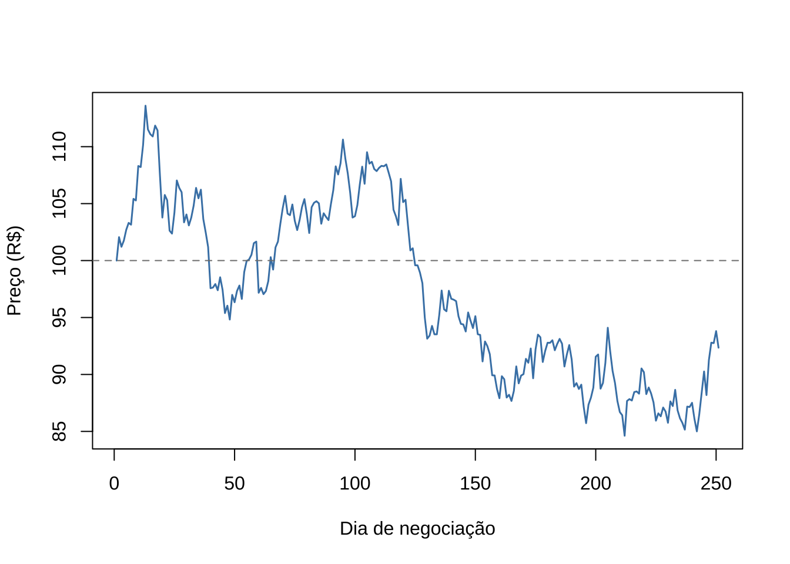
Figure 15.1: Random walk do preço da ação ao longo de 250 dias
Esse gráfico mostra o comportamento típico do random walk: a série vaga sem tendência definida, mas com variância crescente ao longo dos 250 dias de negociação. Diferentemente de uma série estacionária, o preço não tende a retornar a um nível médio — cada choque \(\varepsilon(t)\) se acumula permanentemente, afastando a série de seu valor inicial \(P_0\).
# Variação diária: primeira diferença do passeio aleatório --- série estacionária
plot.ts(delta_P,
col = "firebrick", lwd = 1.5,
xlab = "Dia de negociação",
ylab = expression(Delta * P(t)))
abline(h = 0, lty = 2, col = "gray50")
Figure 15.2: Primeira diferença do preço da ação: variação diária ao longo de 250 dias de negociação
Esse segundo gráfico mostra a variação diária \(\Delta P(t) = P(t) - P(t-1)\) — a primeira diferença do random walk. Diferentemente do anterior, a série oscila em torno de zero com amplitude aproximadamente constante ao longo do tempo, característica de uma série estacionária.
# ACF do nível: autocorrelações decaem lentamente --- indicativo de não estacionaridade
acf(P,
lag.max = 30,
col = "steelblue")
Figure 15.3: ACF do nível do preço da ação: decaimento lento indicativo de não estacionaridade
A ACF do nível do preço \(P(t)\) decai lentamente, com autocorrelações elevadas por muitas defasagens — indicando que observações distantes no tempo ainda são fortemente correlacionadas entre si.
Esse padrão reflete a acumulação permanente dos choques \(\varepsilon(t)\): como cada inovação se incorpora definitivamente ao nível da série, o valor atual carrega memória de todos os choques passados.
É o diagnóstico visual característico de uma série não estacionária com raiz unitária.
# ACF da variação: autocorrelações caem rapidamente para zero --- ruído branco
acf(delta_P,
lag.max = 30,
col = "firebrick")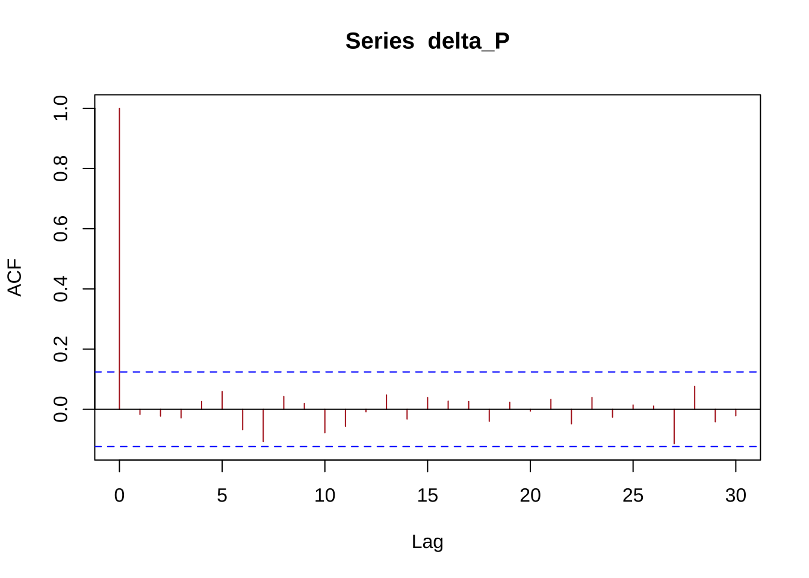
Figure 15.4: ACF da variação diária Delta P(t): decaimento abrupto característico de série estacionária
A ACF da variação diária \(\Delta P(t)\) cai abruptamente para zero após a defasagem zero — as autocorrelações nas defasagens seguintes são estatisticamente nulas, dentro das bandas de confiança tracejadas.
Esse padrão é característico de ruído branco: as inovações \(\varepsilon(t)\) são independentes entre si, sem qualquer estrutura de dependência temporal remanescente.
Contrastando com a ACF do nível do preço \(P(t)\), os dois gráficos sintetizam o diagnóstico visual completo — diferenciar a série remove a raiz unitária e restaura a estacionaridade.
# Teste ADF — confirma formalmente o diagnóstico visual das ACFs
# H0: a série possui raiz unitária (não estacionária)
# H1: a série é estacionária
# Regra de decisão: rejeitar H0 se p-valor < 0,05
# Esperado para P: p-valor > 0,05 --- não rejeita H0 --- raiz unitária confirmada
# Esperado para delta_P: p-valor < 0,05 --- rejeita H0 --- estacionaridade confirmada
cat("--- Teste ADF: nível do preço ---\n")-> --- Teste ADF: nível do preço ---->
-> Augmented Dickey-Fuller Test
->
-> data: P
-> Dickey-Fuller = -2.7, Lag order = 6, p-value = 0.3
-> alternative hypothesis: stationary->
-> --- Teste ADF: variação do preço ----> Warning in adf.test(delta_P, alternative = "stationary"): p-value smaller than
-> printed p-value->
-> Augmented Dickey-Fuller Test
->
-> data: delta_P
-> Dickey-Fuller = -6.7, Lag order = 6, p-value = 0.01
-> alternative hypothesis: stationary15.4 Decomposição de séries temporais
Uma série temporal econômica raramente é composta por um único padrão. Na maior parte dos casos, o que se observa é a sobreposição de diferentes componentes que evoluem em escalas de tempo distintas — tendência de longo prazo, padrões sazonais recorrentes e variações aleatórias residuais.
Separar esses componentes permite três objetivos distintos:
- compreender a estrutura da série e o papel de cada componente em sua variação total;
- construir previsões que incorporem tendência e sazonalidade, como nos métodos de suavização exponencial e Holt-Winters;
- modelar o componente irregular — removidos os determinísticos — por métodos probabilísticos específicos, passo natural seguinte na análise de séries temporais econômicas.
15.4.1 Decomposição clássica
A decomposição clássica assume que a série pode ser expressa como combinação de três componentes mensuráveis: tendência, sazonalidade e irregularidade. Dependendo da natureza da série, a combinação desses componentes pode ser aditiva ou multiplicativa. O modelo aditivo assume que os componentes se somam:
\[ Y(t) = T(t) + S(t) + I(t) \]
O modelo multiplicativo assume que os componentes se multiplicam:
\[ Y(t) = T(t) \cdot S(t) \cdot I(t) \]
em que:
- \(T(t)\): componente de tendência — direção de longo prazo da série.
- \(S(t)\): componente sazonal — padrão regular que se repete a cada ciclo fixo de \(m\) períodos.
- \(I(t)\): componente irregular — variações aleatórias residuais não explicadas pelos demais componentes (ruído).
A escolha entre os dois modelos é guiada pela inspeção visual da série:
- se a amplitude das flutuações sazonais cresce proporcionalmente ao nível da série, o modelo multiplicativo é o mais adequado;
- se a amplitude permanece aproximadamente constante, o modelo aditivo é preferível.
Uma estratégia comum é aplicar a transformação logarítmica à série original, o que converte um modelo multiplicativo em aditivo:
\[ \log Y(t) = \log T(t) + \log S(t) + \log I(t) \]
15.4.1.1 Implementação em R (dados reais)
Os dados utilizados correspondem às vendas mensais (AUD) de uma loja de souvenirs em uma cidade litorânea de Queensland, Austrália apresentados em *Forecasting: Methods and Applications, Makridakis, Wheelwright e Hyndman (1998).
A série cobre o período de janeiro de 1987 a dezembro de 1993, totalizando 84 observações mensais, e apresenta tanto tendência crescente quanto sazonalidade anual pronunciada — características típicas de séries econômicas de varejo.
# Leitura dos dados diretamente do repositório de Hyndman
# scan() importa os valores em coluna única para um vetor numérico
souvenir <- scan("http://robjhyndman.com/tsdldata/data/fancy.dat",
quiet = TRUE)
# Conversão para objeto de série temporal
# frequency = 12: dados mensais (12 observações por ciclo anual)
# start = c(1987, 1): início em janeiro de 1987
souvenir_ts <- ts(souvenir, frequency = 12, start = c(1987, 1))
souvenir_ts-> Jan Feb Mar Apr May Jun Jul Aug Sep Oct
-> 1987 1665 2398 2841 3547 3753 3715 4350 3566 5022 6423
-> 1988 2500 5198 7225 4806 5901 4951 6179 4752 5496 5835
-> 1989 4717 5703 9958 5305 6492 6631 7350 8177 8573 9690
-> 1990 5921 5815 12421 6370 7609 7225 8121 7979 8093 8477
-> 1991 4827 6470 9639 8821 8722 10209 11277 12552 11637 13607
-> 1992 7615 9850 14558 11587 9333 13082 16733 19889 23933 25391
-> 1993 10243 11267 21827 17357 15998 18602 26155 28587 30505 30821
-> Nov Dec
-> 1987 7601 19756
-> 1988 12600 28542
-> 1989 15152 34061
-> 1990 17915 30114
-> 1991 21822 45061
-> 1992 36025 80722
-> 1993 46634 104661
# Gráfico da série original
# A inspeção visual é o primeiro passo antes de qualquer modelagem
plot.ts(souvenir_ts,
col = "steelblue", lwd = 1.5,
xlab = "Ano",
ylab = "Vendas (AUD)")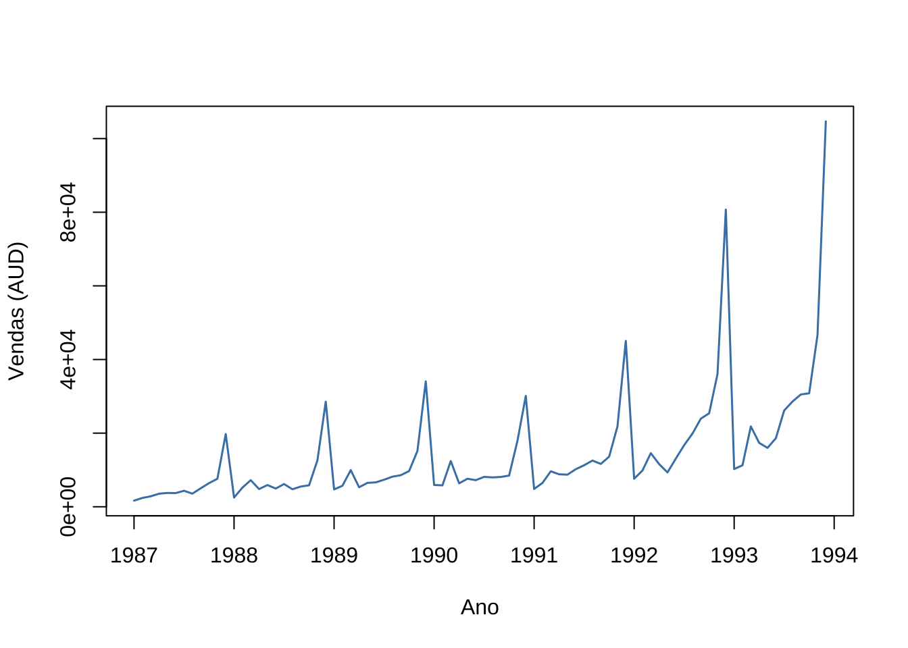
Figure 15.5: Vendas mensais de souvenirs em Queensland (1987–1993)
O gráfico revela duas características imediatas: tendência crescente ao longo do período e picos anuais recorrentes em dezembro, associados à sazonalidade turística.
Mais importante, a amplitude dos picos cresce ao longo do tempo — as flutuações de 1993 são muito maiores do que as de 1987.
Esse padrão indica que o modelo multiplicativo é o mais adequado, ou equivalentemente, que a transformação logarítmica deve ser aplicada antes da decomposição aditiva.
# Transformação logarítmica: converte modelo multiplicativo em aditivo
# log(Y) = log(T) + log(S) + log(I)
# após a transformação, a amplitude sazonal deve ser aproximadamente constante
log_ts <- log(souvenir_ts)
plot.ts(log_ts,
col = "steelblue", lwd = 1.5,
xlab = "Ano",
ylab = "log(Vendas)")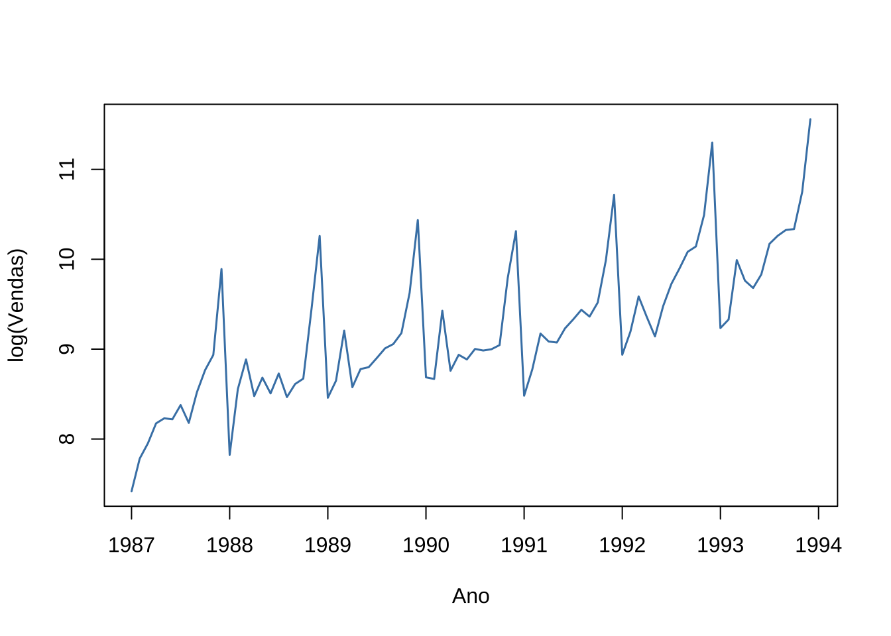
Figure 15.6: Série de vendas após transformação logarítmica
Após a transformação logarítmica, a amplitude das flutuações sazonais torna-se aproximadamente constante ao longo do tempo — confirmando que o modelo aditivo é agora apropriado para a série transformada.
# decompose() implementa a decomposição clássica em três etapas:
# 1. estima T(t) por média móvel centralizada de ordem m=12
# 2. estima S(t) como média dos desvios sazonais em cada mês
# 3. obtém I(t) = log_ts - T(t) - S(t) como resíduo
decomp <- decompose(log_ts)
# O objeto decomp contém:
# decomp$trend: componente de tendência estimada
# decomp$seasonal: índices sazonais (repetidos para cada ano)
# decomp$random: componente irregular residual
# decomp$figure: índices sazonais para cada mês (Jan a Dez)
plot(decomp,
col = "steelblue")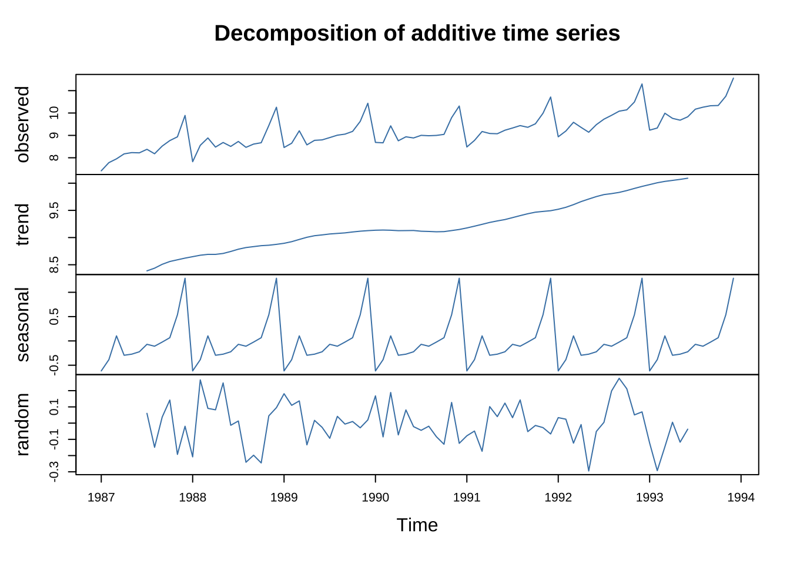
Figure 15.7: Decomposição clássica aditiva da série log-transformada
O gráfico de decomposição apresenta quatro painéis sobrepostos: a série original (topo), a tendência estimada, o componente sazonal e o componente irregular (ruído base).
A tendência revela crescimento contínuo das vendas ao longo do período. O componente sazonal confirma o padrão anual com pico em dezembro e vale em janeiro e fevereiro — reflexo direto da sazonalidade turística.
O componente irregular (ruído), de amplitude relativamente pequena, sugere que tendência e sazonalidade explicam a maior parte da variabilidade da série.
# Índices sazonais mensais (na escala log)
# valores positivos: meses acima da média anual
# valores negativos: meses abaixo da média anual
meses <- c("Jan", "Fev", "Mar", "Abr", "Mai", "Jun",
"Jul", "Ago", "Set", "Out", "Nov", "Dez")
data.frame(Mês = meses,
Índice = round(decomp$figure, 4))-> Mês Índice
-> 1 Jan -0.6167
-> 2 Fev -0.3854
-> 3 Mar 0.1036
-> 4 Abr -0.2950
-> 5 Mai -0.2725
-> 6 Jun -0.2234
-> 7 Jul -0.0700
-> 8 Ago -0.1087
-> 9 Set -0.0239
-> 10 Out 0.0660
-> 11 Nov 0.5375
-> 12 Dez 1.2886
Os índices sazonais quantificam o desvio de cada mês em relação à média anual.
Dezembro apresenta o maior índice positivo — vendas sistematicamente acima da média — enquanto janeiro e fevereiro apresentam os maiores índices negativos.
Em termos econômicos, esses índices são instrumentos diretos de planejamento: um varejista pode antecipar a demanda de cada mês com base no nível atual da tendência corrigido pelo índice sazonal correspondente.
# Ajuste sazonal: remoção do componente sazonal da série original
# série dessazonalizada = log_ts - S(t)
# contém apenas tendência e componente irregular
log_dessaz <- log_ts - decomp$seasonal
plot.ts(log_dessaz,
col = "darkgreen", lwd = 1.5,
xlab = "Ano",
ylab = "log(Vendas) dessazonalizado")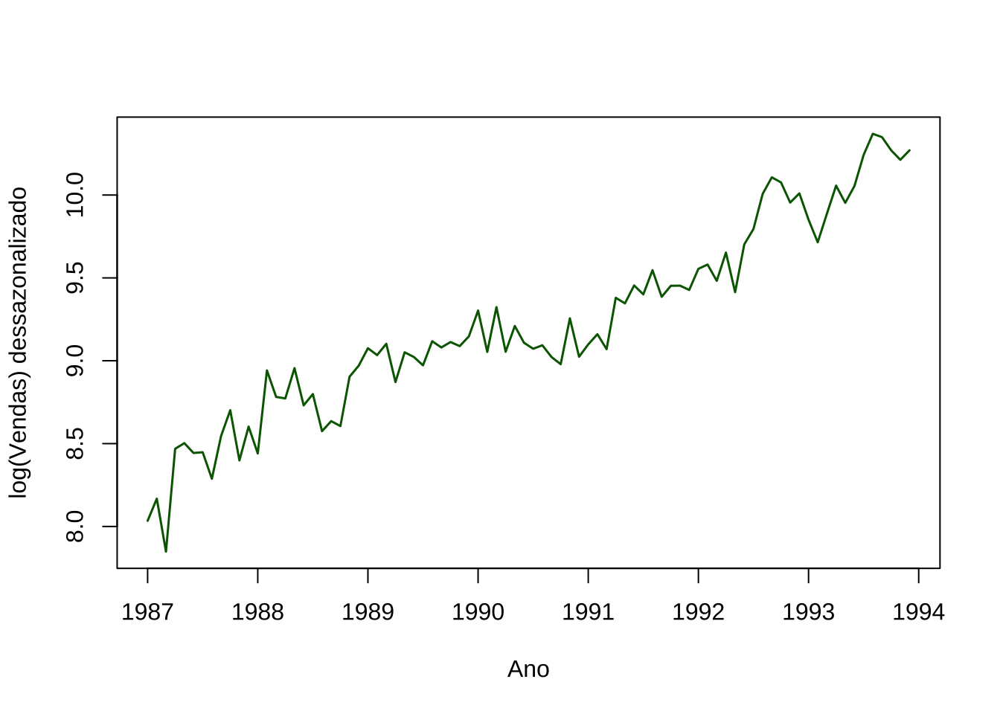
Figure 15.8: Série dessazonalizada: tendência e componente irregular
A série dessazonalizada remove o padrão repetitivo anual, expondo com mais clareza a trajetória de longo prazo das vendas.
A tendência crescente torna-se visualmente mais nítida, e as flutuações remanescentes correspondem ao componente irregular ou ruído — variações não explicadas nem pela tendência nem pela sazonalidade.
15.4.2 Média móvel simples de ordem n (MMS-n) — suavização da tendência
A decomposição clássica estima a tendência por meio de uma média móvel centralizada — calculada internamente pela função decompose(), ela pondera igualmente os \(m/2\) períodos anteriores e posteriores a cada instante \(t\), produzindo uma estimativa suavizada da tendência no centro da janela.
Por essa razão, a média móvel centralizada perde os primeiros e os últimos \(m/2\) pontos da série — os valores marcados como NA no objeto decomp$trend.
A média móvel simples (MMS-n) de ordem \(n\) opera de forma diferente: considera apenas os \(n\) períodos mais recentes, sem olhar para o futuro, calculando para cada instante \(t\) a média aritmética desses períodos:
\[ \text{MMS}_n(t) = \frac{1}{n} \sum_{i=0}^{n-1} X(t-i) \]
Por ser assimétrica — voltada exclusivamente para o passado — é adequada para suavizar a série em tempo real, quando observações futuras ainda não estão disponíveis.
A escolha de \(n\) envolve uma troca: valores pequenos reagem rapidamente às mudanças mas retêm mais ruído; valores grandes suavizam mais mas introduzem defasagem e perdem os primeiros \(n-1\) pontos da série.
15.4.2.1 Implementação em R (dados reais)
O Índice Nacional de Preços ao Consumidor Amplo (IPCA) é o indicador oficial de inflação do Brasil, calculado mensalmente pelo IBGE e utilizado pelo Banco Central como referência para a condução da política monetária.
A série histórica está disponível no Sistema Gerenciador de
Séries Temporais (SGS) do Banco Central, acessível diretamente pelo R
via pacote GetBCBData — código 433.
Para os fins desta seção, utilizaremos a série a partir de janeiro de 1995 — após a implantação do Plano Real — evitando o período de hiperinflação anterior, cujas magnitudes distorceriam as análises de suavização.
#install.packages("GetBCBData")
library(GetBCBData)
library(TTR)
# Código 433: IPCA variação mensal (%)
# Fonte: SGS/Banco Central do Brasil
ipca_raw <- gbcbd_get_series(
id = 433,
first.date = "1995-01-01",
use.memoise = FALSE
)-> ℹ using sequential data fetching for 11 time periods-> ℹ Fetching id = 433 [id=433] | 1995-01-01 -> 1998-01-01-> ℹ Fetching id = 433 [id=433] | 1998-01-01 -> 2001-01-01-> ℹ Fetching id = 433 [id=433] | 2001-01-01 -> 2004-01-01-> ℹ Fetching id = 433 [id=433] | 2004-01-01 -> 2007-01-01-> ℹ Fetching id = 433 [id=433] | 2007-01-01 -> 2010-01-01-> ℹ Fetching id = 433 [id=433] | 2010-01-01 -> 2013-01-01-> ℹ Fetching id = 433 [id=433] | 2013-01-01 -> 2016-01-01-> ℹ Fetching id = 433 [id=433] | 2016-01-01 -> 2019-01-01-> ℹ Fetching id = 433 [id=433] | 2019-01-01 -> 2022-01-01-> ℹ Fetching id = 433 [id=433] | 2022-01-01 -> 2025-01-01-> ℹ Fetching id = 433 [id=433] | 2025-01-01 -> 2026-06-11-> ✔ got data with 376 rows and 4 columns-> ✔ Finished fetching data. Total rows: 376# Converter para objeto ts
# frequency = 12: dados mensais
# start: ano e mês de início
ipca_ts <- ts(ipca_raw$value,
start = c(1995, 1),
frequency = 12)
ipca_ts-> Jan Feb Mar Apr May Jun Jul Aug Sep Oct Nov Dec
-> 1995 1.70 1.02 1.55 2.43 2.67 2.26 2.36 0.99 0.99 1.41 1.47 1.56
-> 1996 1.34 1.03 0.35 1.26 1.22 1.19 1.11 0.44 0.15 0.30 0.32 0.47
-> 1997 1.18 0.50 0.51 0.88 0.41 0.54 0.22 -0.02 0.06 0.23 0.17 0.43
-> 1998 0.71 0.46 0.34 0.24 0.50 0.02 -0.12 -0.51 -0.22 0.02 -0.12 0.33
-> 1999 0.70 1.05 1.10 0.56 0.30 0.19 1.09 0.56 0.31 1.19 0.95 0.60
-> 2000 0.62 0.13 0.22 0.42 0.01 0.23 1.61 1.31 0.23 0.14 0.32 0.59
-> 2001 0.57 0.46 0.38 0.58 0.41 0.52 1.33 0.70 0.28 0.83 0.71 0.65
-> 2002 0.52 0.36 0.60 0.80 0.21 0.42 1.19 0.65 0.72 1.31 3.02 2.10
-> 2003 2.25 1.57 1.23 0.97 0.61 -0.15 0.20 0.34 0.78 0.29 0.34 0.52
-> 2004 0.76 0.61 0.47 0.37 0.51 0.71 0.91 0.69 0.33 0.44 0.69 0.86
-> 2005 0.58 0.59 0.61 0.87 0.49 -0.02 0.25 0.17 0.35 0.75 0.55 0.36
-> 2006 0.59 0.41 0.43 0.21 0.10 -0.21 0.19 0.05 0.21 0.33 0.31 0.48
-> 2007 0.44 0.44 0.37 0.25 0.28 0.28 0.24 0.47 0.18 0.30 0.38 0.74
-> 2008 0.54 0.49 0.48 0.55 0.79 0.74 0.53 0.28 0.26 0.45 0.36 0.28
-> 2009 0.48 0.55 0.20 0.48 0.47 0.36 0.24 0.15 0.24 0.28 0.41 0.37
-> 2010 0.75 0.78 0.52 0.57 0.43 0.00 0.01 0.04 0.45 0.75 0.83 0.63
-> 2011 0.83 0.80 0.79 0.77 0.47 0.15 0.16 0.37 0.53 0.43 0.52 0.50
-> 2012 0.56 0.45 0.21 0.64 0.36 0.08 0.43 0.41 0.57 0.59 0.60 0.79
-> 2013 0.86 0.60 0.47 0.55 0.37 0.26 0.03 0.24 0.35 0.57 0.54 0.92
-> 2014 0.55 0.69 0.92 0.67 0.46 0.40 0.01 0.25 0.57 0.42 0.51 0.78
-> 2015 1.24 1.22 1.32 0.71 0.74 0.79 0.62 0.22 0.54 0.82 1.01 0.96
-> 2016 1.27 0.90 0.43 0.61 0.78 0.35 0.52 0.44 0.08 0.26 0.18 0.30
-> 2017 0.38 0.33 0.25 0.14 0.31 -0.23 0.24 0.19 0.16 0.42 0.28 0.44
-> 2018 0.29 0.32 0.09 0.22 0.40 1.26 0.33 -0.09 0.48 0.45 -0.21 0.15
-> 2019 0.32 0.43 0.75 0.57 0.13 0.01 0.19 0.11 -0.04 0.10 0.51 1.15
-> 2020 0.21 0.25 0.07 -0.31 -0.38 0.26 0.36 0.24 0.64 0.86 0.89 1.35
-> 2021 0.25 0.86 0.93 0.31 0.83 0.53 0.96 0.87 1.16 1.25 0.95 0.73
-> 2022 0.54 1.01 1.62 1.06 0.47 0.67 -0.68 -0.36 -0.29 0.59 0.41 0.62
-> 2023 0.53 0.84 0.71 0.61 0.23 -0.08 0.12 0.23 0.26 0.24 0.28 0.56
-> 2024 0.42 0.83 0.16 0.38 0.46 0.21 0.38 -0.02 0.44 0.56 0.39 0.52
-> 2025 0.16 1.31 0.56 0.43 0.26 0.24 0.26 -0.11 0.48 0.09 0.18 0.33
-> 2026 0.33 0.70 0.88 0.67
# Visualização da série original
plot.ts(ipca_ts,
col = "steelblue", lwd = 1,
xlab = "Ano",
ylab = "Variação mensal (%)")
abline(h = 0, lty = 2, col = "gray50")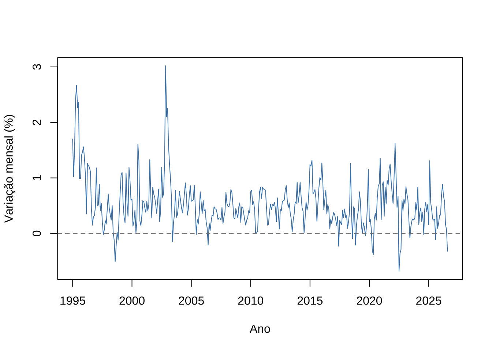
Figure 15.9: Variação mensal do IPCA — janeiro de 1995 a dezembro de 2023
A série do IPCA pós-Real oscila em torno de valores positivos baixos, com episódios de inflação mais elevada associados a choques específicos— desvalorização cambial de 1999, crise energética de 2001, eleições de 2002, choque de commodities de 2015–2016 e pressões inflacionárias de 2021–2022.
Diferentemente do random walk — como o nível do preço da ação \(P(t)\) simulado na seção anterior, cuja variância cresce indefinidamente com o tempo — a série do IPCA não acumula os choques permanentemente: ela tende a retornar a um nível médio, comportamento mais próximo de uma série estacionária.
# MMS de ordem 3: suavização leve --- ainda sensível a flutuações mensais
ipca_sma3 <- SMA(ipca_ts, n = 3)
# MMS de ordem 12: equivale à média dos últimos 12 meses
# remove a sazonalidade anual e destaca a tendência de médio prazo
ipca_sma12 <- SMA(ipca_ts, n = 12)
plot.ts(ipca_ts,
col = "gray70", lwd = 1,
xlab = "Ano",
ylab = "Variação mensal (%)",
ylim = range(ipca_ts, na.rm = TRUE))
lines(ipca_sma3, col = "firebrick", lwd = 1.5)
lines(ipca_sma12, col = "steelblue", lwd = 2)
abline(h = 0, lty = 2, col = "gray50")
legend("topright",
legend = c("IPCA original", "MMS-3", "MMS-12"),
col = c("gray70", "firebrick", "steelblue"),
lwd = c(1, 1.5, 2), bty = "n")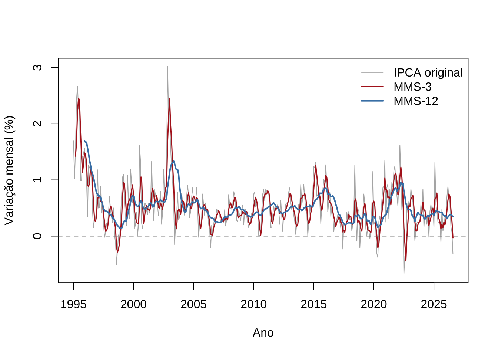
Figure 15.10: IPCA mensal com médias móveis de ordem 3 e 12
A MMS-3 acompanha de perto a série original, removendo apenas as flutuações mais ruidosas.
A MMS-12 — equivalente à média dos últimos doze meses — revela com clareza os ciclos de médio prazo da inflação brasileira: o processo de desinflação dos anos 1990, os episódios de aceleração inflacionária e os períodos de convergência à meta.
Em termos econômicos, a MMS-12 é análoga ao conceito de inflação acumulada em 12 meses, amplamente utilizado pelo Banco Central e pela imprensa especializada.
15.4.3 Suavização exponencial simples (SES) — previsão de curto prazo
A média móvel simples (MMS) atribui peso igual a todos os \(n\) períodos da janela e peso zero a todos os períodos anteriores.
A suavização exponencial simples (SES) generaliza esse esquema atribuindo pesos decrescentes geometricamente a todas as observações passadas:
\[ \hat{X}(t+1) = \alpha \cdot X(t) + (1-\alpha) \cdot \hat{X}(t) \]
expandindo recursivamente:
\[ \hat{X}(t+1) = \alpha \sum_{k=0}^{\infty} (1-\alpha)^k X(t-k), \qquad 0 < \alpha < 1 \]
O parâmetro \(\alpha\) controla a memória do modelo: valores próximos de 1 dão peso quase exclusivo à observação mais recente; valores próximos de 0 distribuem o peso de forma mais uniforme pelo passado. Em política monetária, um banco central que reage fortemente à inflação corrente opera com \(\alpha\) elevado; um que suaviza sua resposta ao longo do tempo opera com \(\alpha\) baixo.
A SES é adequada para séries sem tendência e sem sazonalidade — como o IPCA pós-Real, que oscila em torno de uma média aproximadamente estável. Quando a série apresenta os dois padrões simultaneamente, a SES os ignora, produzindo previsões sistematicamente defasadas. Essa limitação motiva o método apresentado na seção seguinte.
15.4.3.1 Implementação em R (dados reais)
A função HoltWinters() com beta = FALSE e gamma = FALSE reduz o método ao caso mais simples — apenas o parâmetro \(\alpha\) é estimado, por mínimos quadrados, minimizando o erro quadrático médio entre os valores observados e os valores suavizados.
O resultado de \(\alpha\) estimado pelo R indica qual peso o próprio modelo, ajustado aos dados, atribui à observação mais recente em relação à história acumulada.
# HoltWinters com beta=FALSE e gamma=FALSE: suavização exponencial simples
# o parâmetro alpha é estimado automaticamente por mínimos quadrados
ses_ipca <- HoltWinters(ipca_ts, beta = FALSE, gamma = FALSE)
# alpha estimado
cat("Parâmetro alpha estimado:", round(ses_ipca$alpha, 4), "\n")-> Parâmetro alpha estimado: 0.6913
O valor estimado \(\hat{\alpha} = 0,6913\) indica que aproximadamente \(69\%\) do peso da previsão recai sobre a observação mais recente e apenas \(31\%\) sobre toda a história anterior.
Um \(\alpha\) elevado — típico de séries com muita variabilidade — reflete que o modelo descarta rapidamente a história passada e se concentra nos valores recentes, comportamento adequado para uma série como o IPCA, sujeita a choques de curta duração.
# Gráfico: série original e valores suavizados
plot(ses_ipca,
main = NULL,
xlab = "Ano",
ylab = "Variação mensal (%)")
legend("topright",
legend = c("IPCA original", "SES"),
col = c("black", "red"),
lwd = c(1, 1.5), bty = "n")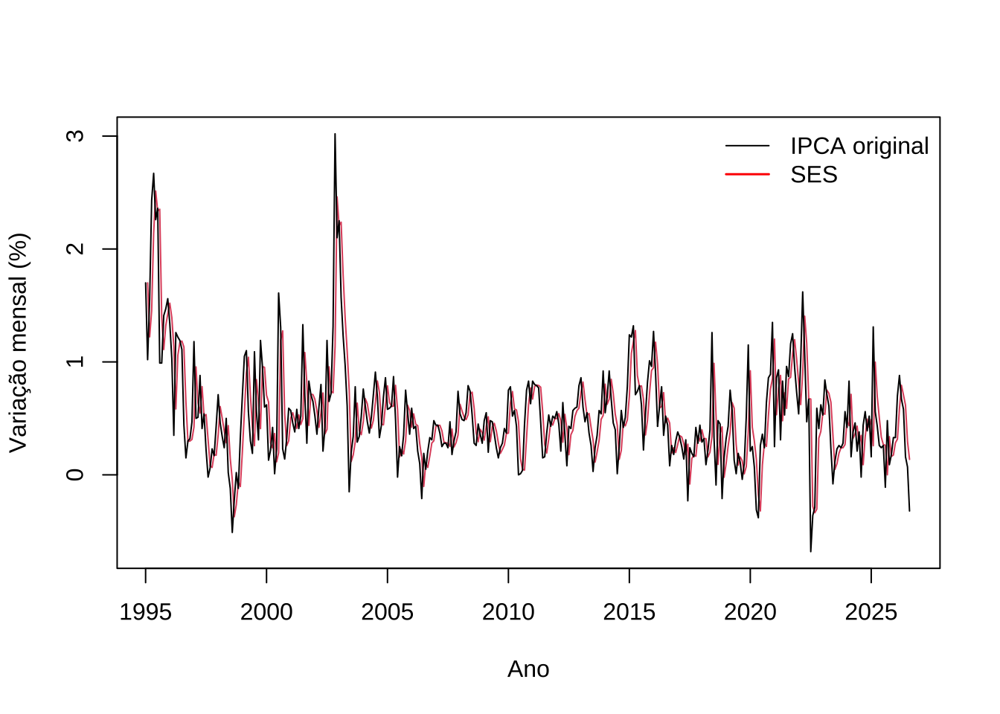
Figure 15.11: Suavização exponencial simples do IPCA mensal
O gráfico apresenta a série original do IPCA (preto) e os valores suavizados pela SES (vermelho).
A linha suavizada acompanha as flutuações da série original com uma defasagem característica — consequência direta do mecanismo de atualização: a previsão para \(t+1\) é formada antes que a observação \(t+1\) seja conhecida.
Nos episódios de aceleração inflacionária, a linha suavizada reage com atraso, refletindo que o modelo ainda carrega o peso das observações anteriores de inflação mais baixa.
Nos episódios de queda, o mesmo comportamento ocorre em sentido inverso.
15.5 Holt-Winters e previsão
A SES é adequada para séries sem tendência e sem sazonalidade — como o IPCA pós-Real, que oscila em torno de uma média aproximadamente estável.
Quando a série apresenta os dois padrões simultaneamente, a SES os ignora, produzindo previsões sistematicamente defasadas.
O método de Holt-Winters resolve essa limitação incorporando três equações de atualização simultâneas — uma para o nível, uma para a tendência e uma para a sazonalidade — permitindo previsões em séries que apresentam os dois padrões simultaneamente.
15.5.1 Modelo aditivo e multiplicativo
O método de Holt-Winters apresenta duas variações, análogas às da decomposição clássica:
- Modelo aditivo: adequado quando as variações sazonais são aproximadamente constantes ao longo do tempo.
- Modelo multiplicativo: adequado quando as variações sazonais crescem proporcionalmente ao nível da série.
As três equações de atualização do modelo aditivo são:
\[ \begin{aligned} L(t) &= \alpha\,[Y(t) - S(t-m)] + (1-\alpha)\,[L(t-1) + B(t-1)] \\[6pt] B(t) &= \beta\,[L(t) - L(t-1)] + (1-\beta)\,B(t-1) \\[6pt] S(t) &= \gamma\,[Y(t) - L(t)] + (1-\gamma)\,S(t-m) \end{aligned} \]
em que \(m\) é o número de períodos por ciclo sazonal (\(m = 12\) para dados mensais), \(L(t)\) é o nível estimado, \(B(t)\) é a tendência estimada e \(S(t)\) é o índice sazonal estimado. A previsão para \(h\) períodos à frente é:
\[ \hat{Y}(t+h) = L(t) + h \cdot B(t) + S(t - m + h_m) \]
em que \(h_m = h \bmod m\). Os três parâmetros de suavização têm interpretações econômicas diretas:
- \(\alpha\): peso do nível corrente — um \(\alpha\) elevado significa que o modelo reage rapidamente a mudanças no nível da série.
- \(\beta\): peso da tendência corrente — um \(\beta\) elevado significa que o modelo ajusta rapidamente a inclinação da trajetória.
- \(\gamma\): peso do padrão sazonal corrente — um \(\gamma\) elevado significa que os índices sazonais são recalibrados a cada ciclo.
15.5.2 Implementação em R — vendas de souvenirs (Queensland)
Retomamos os dados de vendas de souvenirs em Queensland. Como a amplitude das flutuações sazonais cresce com o nível da série, o modelo multiplicativo é o mais adequado.
# Ajuste do modelo Holt-Winters multiplicativo
# seasonal = "multiplicative": variações sazonais proporcionais ao nível
hw_mult <- HoltWinters(souvenir_ts, seasonal = "multiplicative")
# Parâmetros estimados automaticamente por mínimos quadrados
cat("alpha (nível): ", round(hw_mult$alpha, 4), "\n")-> alpha (nível): 0.4889-> beta (tendência): 0.0465-> gamma (sazonalidade): 0.9475
# Previsão para os próximos 12 meses (horizonte h = 12)
prev_hw <- predict(hw_mult, n.ahead = 12)
# Gráfico: série original, valores ajustados e previsão
plot(hw_mult, prev_hw,
xlab = "Ano",
ylab = "Vendas (AUD)")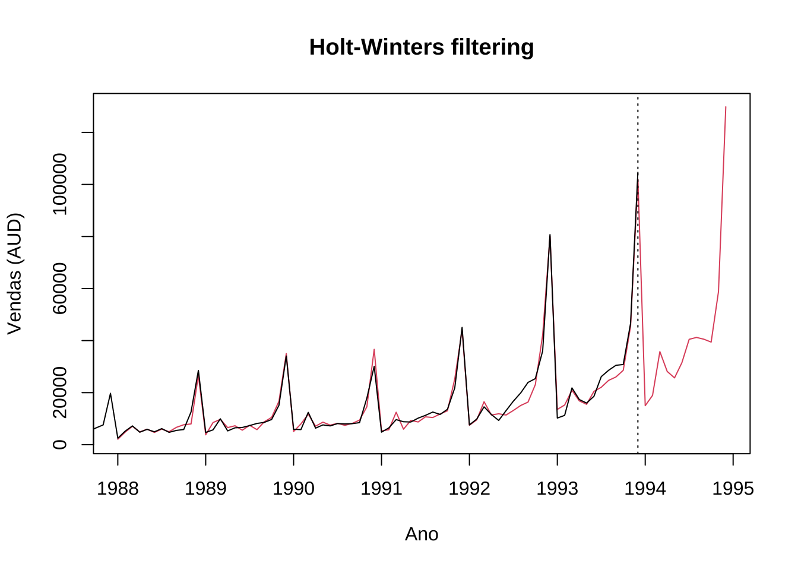
Figure 15.12: Holt-Winters multiplicativo — ajuste e previsão para 1994
O gráfico apresenta a série original (preto), os valores ajustados pelo modelo (vermelho sólido) e a previsão para os 12 meses seguintes (vermelho tracejado).
O modelo captura com precisão tanto a tendência crescente quanto o padrão sazonal anual.
A previsão para 1994 projeta continuidade do crescimento com pico em dezembro, consistente com o padrão histórico.
15.5.3 Avaliação do modelo
Após o ajuste, os resíduos do modelo devem ser examinados.
Um bom ajuste produz resíduos que se comportam como ruído branco — média zero, variância constante e ausência de autocorrelação.
A presença de padrões nos resíduos indica que o modelo não capturou toda a estrutura da série.
# Resíduos: diferença entre valores observados e ajustados
residuos_hw <- residuals(hw_mult)
plot(residuos_hw,
type = "l", col = "steelblue", lwd = 1,
xlab = "Ano",
ylab = "Resíduo")
abline(h = 0, lty = 2, col = "gray50")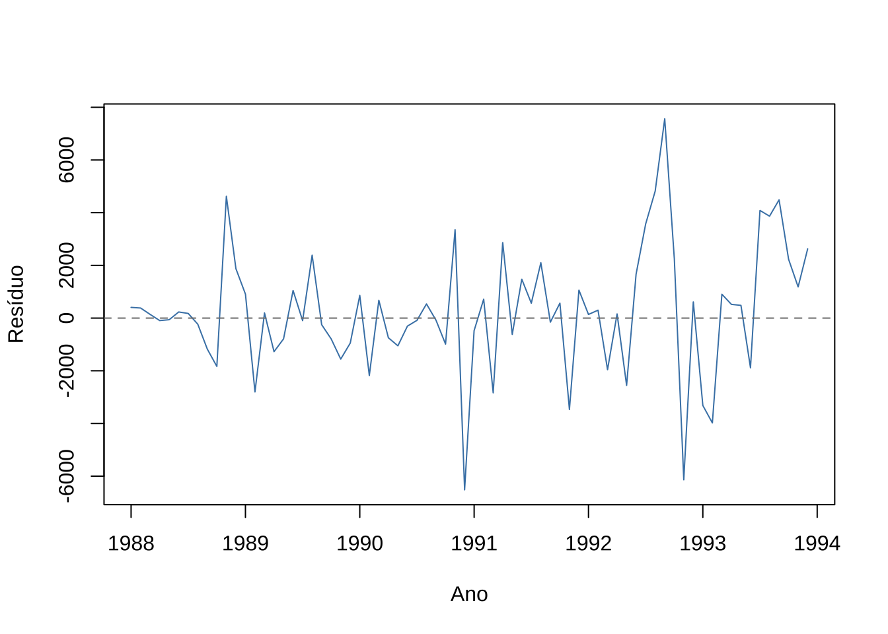
Figure 15.13: Resíduos do modelo Holt-Winters multiplicativo
# ACF dos resíduos: decaimento abrupto indica ausência de autocorrelação
acf(residuos_hw,
lag.max = 24,
col = "steelblue",
main = NULL)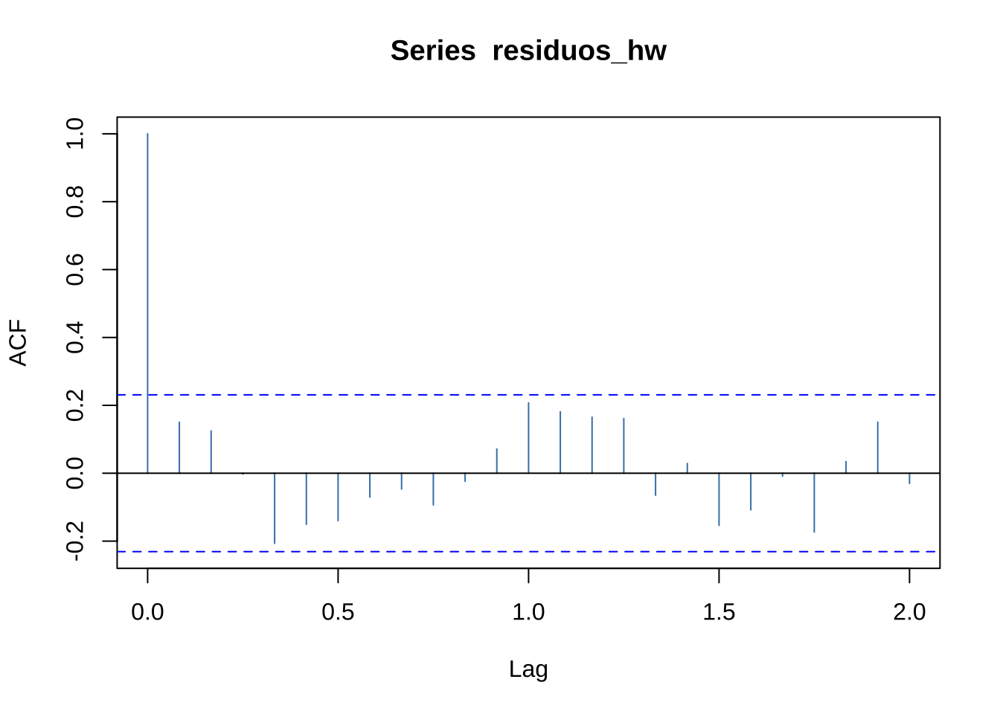
Figure 15.14: ACF dos resíduos do modelo Holt-Winters
O teste de Ljung-Box avalia formalmente se os resíduos apresentam autocorrelação remanescente.
# Teste de Ljung-Box
# H0: resíduos são ruído branco (sem autocorrelação)
# H1: resíduos apresentam autocorrelação
# Regra: não rejeitar H0 se p-valor > 0,05
box_test <- Box.test(residuos_hw, lag = 12, type = "Ljung-Box")
print(box_test)->
-> Box-Ljung test
->
-> data: residuos_hw
-> X-squared = 15, df = 12, p-value = 0.2
Um \(p\)-valor superior a \(0,05\) indica que não há evidência de autocorrelação — os resíduos se comportam como ruído branco, confirmando o bom ajuste do modelo.
As métricas de acurácia quantificam o desempenho preditivo do modelo.
# Métricas de acurácia da previsão
# accuracy() requer objeto da classe forecast --- converter via forecast()
# MAE: Mean Absolute Error --- erro médio absoluto
# RMSE: Root Mean Squared Error --- penaliza erros grandes
# MAPE: Mean Absolute Percentage Error --- erro percentual médio absoluto
library(forecast)
accuracy(forecast(hw_mult))-> ME RMSE MAE MPE MAPE MASE ACF1
-> Training set 241.4 2354 1665 -0.3779 12.78 0.3763 0.1503
O MAPE — erro percentual médio absoluto — é a medida mais intuitiva para séries econômicas: indica, em média, em quantos por cento o modelo erra em relação ao valor observado.
15.6 Implementação em R (dados reais)
A Penn World Table (PWT) é uma base de dados internacional que reúne séries de PIB, estoques de capital e trabalho para um amplo conjunto de países, medidos a preços constantes e corrigidos pela paridade do poder de compra (PPC).
A versão 8.0, disponível no pacote pwt8 do R, cobre o período de 1950 a 2011 e é amplamente utilizada em pesquisas sobre crescimento econômico e produtividade entre países.
# install.packages("pwt8")
library(pwt8)
# Carregar os dados da Penn World Table 8.0
data("pwt8.0")
# Selecionar variáveis de interesse para o Brasil:
# rgdpna: PIB real a preços constantes (milhões de USD, PPC 2005)
# avh: média anual de horas trabalhadas por trabalhador
# xr: taxa de câmbio (moeda local por USD)
brasil <- subset(pwt8.0,
country == "Brazil",
select = c(year, rgdpna, avh, xr))
# Produtividade do trabalho: PIB real por hora trabalhada
brasil$prod <- brasil$rgdpna / brasil$avh
-> rgdpna avh xr prod
-> Min. : 86574 Min. :1841 Min. :0.000 Min. : 42.4
-> 1st Qu.: 243582 1st Qu.:1852 1st Qu.:0.000 1st Qu.:113.8
-> Median : 754345 Median :1980 Median :0.000 Median :384.2
-> Mean : 727721 Mean :1984 Mean :0.542 Mean :381.7
-> 3rd Qu.:1100338 3rd Qu.:2104 3rd Qu.:0.983 3rd Qu.:594.2
-> Max. :1752481 Max. :2145 Max. :3.078 Max. :951.9
O resumo estatístico revela a amplitude do período analisado: o PIB real varia de aproximadamente USD 87 bilhões em 1950 a USD 1,75 trilhão em 2011, refletindo mais de seis décadas de crescimento econômico.
A média de horas trabalhadas exibe trajetória decrescente ao longo do período — tendência comum a economias em desenvolvimento que ampliam sua base de serviços e regulamentação trabalhista.
# Histograma da produtividade do trabalho
# distribuição assimétrica esperada: concentração em valores baixos
# (período pré-milagre) com cauda direita (crescimento recente)
hist(brasil$prod,
breaks = 12,
col = "lightblue",
border = "white",
main = NULL,
xlab = "PIB real por hora trabalhada (USD PPC 2005)",
ylab = "Frequência")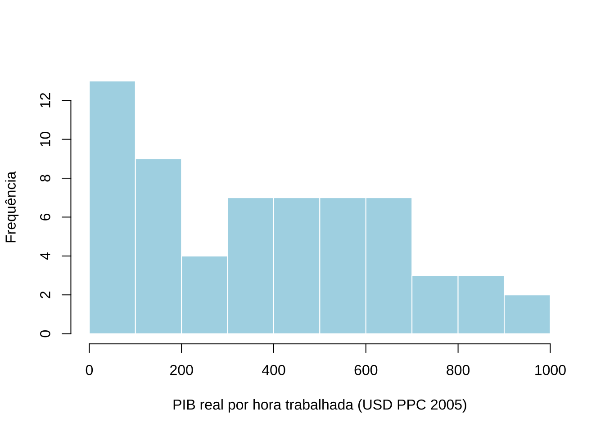
Figure 15.15: Distribuição da produtividade do trabalho — Brasil (1950–2011)
O histograma revela distribuição assimétrica à direita: a maior parte das observações concentra-se em valores baixos de produtividade — correspondentes ao período anterior ao milagre econômico — com uma cauda direita que reflete o crescimento das últimas décadas da série.
# Converter para objetos de série temporal
# frequency = 1: dados anuais
# start = 1950: primeiro ano da série
pib_ts <- ts(brasil$rgdpna, start = 1950, frequency = 1)
prod_ts <- ts(brasil$prod, start = 1950, frequency = 1)
par(mfrow = c(1, 2), mar = c(4, 4, 3, 1))
plot(pib_ts,
col = "steelblue", lwd = 2,
main = NULL,
xlab = "Ano",
ylab = "PIB real (milhões USD PPC 2005)")
plot(prod_ts,
col = "darkgreen", lwd = 2,
main = NULL,
xlab = "Ano",
ylab = "PIB por hora trabalhada")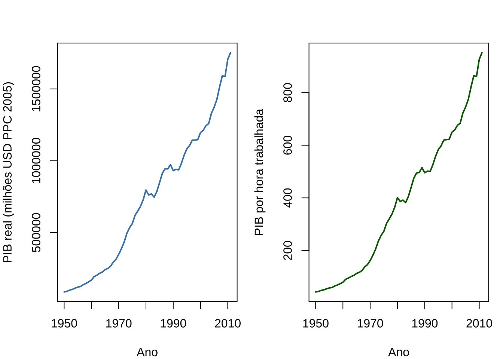
Figure 15.16: PIB real e produtividade do trabalho — Brasil (1950–2011)
As duas séries exibem tendência crescente ao longo do período, interrompida por episódios recessivos claramente identificáveis: a crise da dívida de 1981–1983, a recessão de 1990 e a estagnação relativa dos anos 1980 — a década perdida.
A aceleração do crescimento a partir dos anos 2000 é visível em ambas as séries.
# Taxa de crescimento aproximada: primeira diferença do log-PIB
# Δ log PIB(t) ≈ variação percentual para valores pequenos
# multiplicado por 100 para expressar em pontos percentuais
taxa_cresc <- diff(log(pib_ts)) * 100
plot(taxa_cresc,
type = "b", col = "firebrick", lwd = 1.5,
pch = 16, cex = 0.7,
xlab = "Ano",
ylab = "Variação % aproximada")
abline(h = 0, lty = 2, col = "gray50")
abline(h = mean(taxa_cresc), lty = 3, col = "steelblue")
legend("topright",
legend = c("Taxa de crescimento", "Média histórica"),
col = c("firebrick", "steelblue"),
lty = c(1, 3), lwd = 2, bty = "n")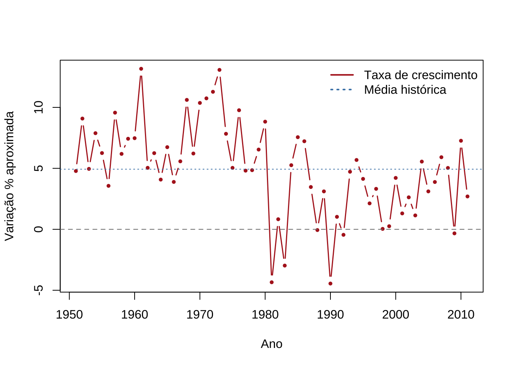
Figure 15.17: Taxa de crescimento anual do PIB real — Brasil (1951–2011)
-> Média histórica: 4.93 % ao ano-> Desvio-padrão: 3.81 % ao ano-> Mínimo: -4.45 % ( 1990 )-> Máximo: 13.17 % ( 1961 )
A taxa de crescimento oscila em torno de uma média histórica de aproximadamente 4% ao ano, com pico durante o milagre econômico (1968–1973) e valores negativos nos episódios recessivos.
Essa série — a primeira diferença do log-PIB — apresenta comportamento estacionário, confirmando que o nível do PIB é integrado de ordem 1, conforme discutido na seção do passeio aleatório.
15.7 Processo de Poisson
Alguns experimentos aleatórios envolvem, essencialmente, contagens de eventos observadas em um intervalo de tempo — como, por exemplo, o número de clientes que entram em um supermercado por dia.
O Processo de Poisson é um modelo estocástico fundamental para descrever esse tipo de fenômeno: trata-se de um processo de tempo contínuo e espaço de estados discreto, no qual eventos aleatórios ocorrem de forma independente e imprevisível, porém a uma taxa média constante.
Tal modelo permite caracterizar dois aspectos complementares de um mesmo fenômeno: (a) a distribuição do número de ocorrências em um intervalo de tempo fixado e (b) a distribuição dos tempos entre ocorrências consecutivas.
Por sua flexibilidade e fundamentação teórica, o Processo de Poisson encontra aplicação em uma ampla variedade de contextos:
- Sistemas de filas: chegada de clientes a bancos, caixas eletrônicos e centrais de atendimento.
- Telecomunicações: chegada de chamadas, pacotes de dados e detecção de sinais.
- Engenharia de confiabilidade: modelagem de falhas de componentes sob taxa de falha constante.
- Finanças: chegada de ordens de negociação e modelagem de eventos extremos em mercados financeiros.
- Ciências naturais: decaimento radioativo, emissão de fótons e ocorrência de terremotos.
15.7.1 Definição formal do processo de Poisson
Um processo de contagem \(\{N_t : t \geq 0\}\) é dito ser um Processo de Poisson com taxa \(\lambda > 0\) se satisfaz as seguintes condições:
- \(N(0) = 0\);
- o processo tem incrementos independentes e estacionários;
- o número de eventos (\(k\)) em qualquer intervalo de comprimento \(t\) segue distribuição de Poisson com média \(\lambda t\), isto é, para \(s, t \geq 0\):
\[
P(N(t + s) - N(s) = k) = \frac{e^{-\lambda t}\cdot(\lambda t)^k}{k!}
\]
Em particular, para um intervalo iniciado em \(s = 0\):
\[ P(N(t) = n) = \frac{e^{-\lambda t}(\lambda t)^n}{n!} \]
15.7.1.1 Processos de contagem: propriedades fundamentais
Definição 1. Um processo de contagem é um processo estocástico \(\{N_t : t \in [0, \infty)\}\) em que \(N_t\) representa o número de eventos ocorridos no intervalo \([0, t]\). O processo deve satisfazer:
- \(N_0 = 0\) — no instante inicial, a contagem é zero;
- \(N_t \in \{0, 1, 2, \ldots\}\) — os valores são contagens inteiras não negativas;
- se \(s < t\), então \(N_s \leq N_t\) — a função de contagem é não decrescente;
- para \(s < t\), a diferença \(N_t - N_s\) representa o número de eventos ocorridos no intervalo \((s, t]\).

Definição 2. Um processo de contagem tem incrementos independentes se o número de eventos em intervalos disjuntos são variáveis aleatórias independentes. Formalmente, para \(0 \leq t_1 < t_2 < \cdots < t_n\), as variáveis
\[N(t_2) - N(t_1),\; N(t_3) - N(t_2),\; \ldots,\; N(t_n) - N(t_{n-1})\]
são mutuamente independentes.
Definição 3. Um processo de contagem tem incrementos estacionários se a distribuição do número de eventos em qualquer intervalo depende apenas da duração do intervalo, e não de sua posição no tempo. Por exemplo, a probabilidade de ocorrer um evento entre 9h e 10h é a mesma que entre 15h e 16h: \(P(N([9, 10])) = P(N([15, 16]))\).

Figure 15.18: O processo de Poisson: (1) tem contagem zero em \(t=0\); (2) se \(s < t\) então \(N(s) \leq N(t)\); (3) \(N(t)\) é não decrescente; (4) os incrementos são independentes.
15.7.1.2 Formulação infinitesimal equivalente
Uma formulação alternativa e equivalente define o Processo de Poisson por meio de probabilidades infinitesimais. Para um incremento de tempo \(h\) suficientemente pequeno:
\[ P(N(t+h) - N(t) = 1) = \lambda h + o(h) \]
\[ P(N(t+h) - N(t) \geq 2) = o(h) \]
em que \(o(h)\) denota um termo que tende a zero mais rapidamente que \(h\), isto é, \(\lim_{h \to 0} o(h)/h = 0\). A primeira condição estabelece que a probabilidade de exatamente um evento em um intervalo muito curto é aproximadamente proporcional à sua duração; a segunda estabelece que a probabilidade de dois ou mais eventos simultâneos é desprezível.
15.7.2 Propriedades do Processo de Poisson
15.7.2.1 1. Intervalos entre chegadas, falta de memória e conexões com outras distribuições
Até aqui o processo de Poisson foi descrito pela perspectiva das contagens: quantos eventos ocorrem em um intervalo de tempo. Há, porém, uma perspectiva complementar igualmente útil: a dos tempos de espera entre eventos consecutivos.
Seja \(T_1\) o tempo até o primeiro evento, \(T_2\) o tempo entre o primeiro e o segundo evento, e assim por diante. Esses intervalos são denominados tempos entre eventos (interarrival times). Uma propriedade fundamental do processo de Poisson é que esses intervalos seguem distribuição exponencial com parâmetro \(\lambda\):
\[ T_i \sim \text{Exponencial}(\lambda), \quad i = 1, 2, \ldots \]
A intuição é direta: como o processo tem incrementos independentes e estacionários, o tempo de espera pelo próximo evento não depende de quando foi o último — o processo não tem “memória” do passado. A distribuição exponencial é precisamente a única distribuição contínua com essa propriedade, denominada falta de memória:
\[ \Pr(T > s + t \mid T > s) = \Pr(T > t) \]
Suponha \(\lambda = 2\) eventos por minuto. A probabilidade de esperar mais de 1 minuto pelo próximo evento é \(\Pr(T > 1) = e^{-2} \approx 0,135\). Se já se passaram 3 minutos sem nenhum evento, essa probabilidade permanece \(e^{-2} \approx 0,135\) — o tempo já decorrido não altera a distribuição do tempo restante.
Estendendo o raciocínio: o tempo até o \(n\)-ésimo evento, \(S_n = T_1 + T_2 + \cdots + T_n\), é a soma de \(n\) variáveis exponenciais independentes com mesmo parâmetro \(\lambda\), seguindo distribuição Gamma:
\[ S_n \sim \text{Gamma}(n, \lambda) \]
Cada \(T_i\) representa uma “etapa” de espera, e \(S_n\) acumula \(n\) dessas etapas. A distribuição Gamma com parâmetro de forma inteiro \(n\) é também denominada distribuição de Erlang, amplamente utilizada em modelos de filas para representar o tempo total de atendimento de \(n\) clientes consecutivos.
O diagrama a seguir resume as conexões entre o processo de Poisson e as distribuições relacionadas:
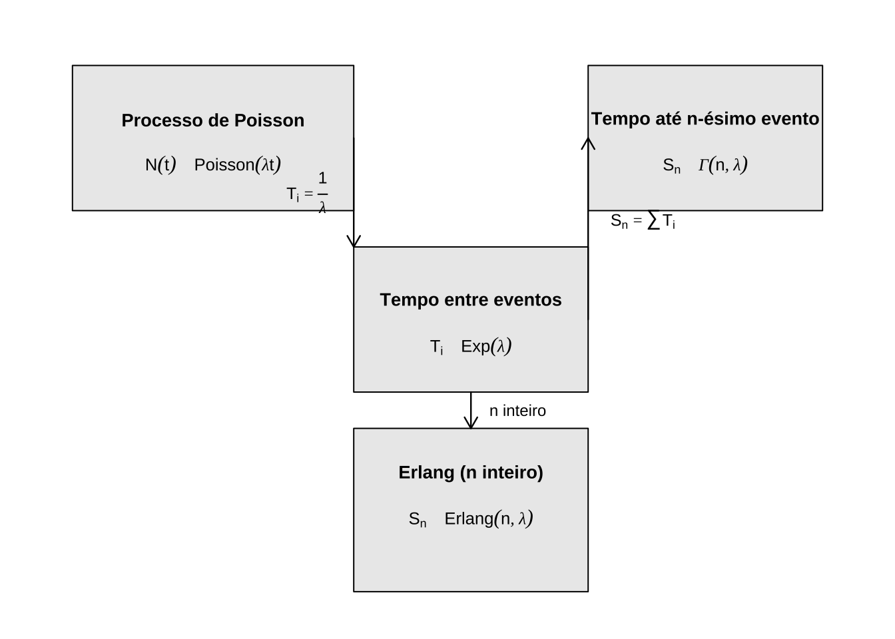
Figure 15.19: Conexões entre o processo de Poisson e as distribuições exponencial, Gamma e Erlang.
15.7.2.2 2. Incrementos estacionários e independentes
- O número de eventos no intervalo \([t_1, t_2]\) depende apenas de \(t_2 - t_1\).
- Eventos em intervalos disjuntos são estatisticamente independentes.
15.7.2.3 3. Aditividade
Se \(N_1(t)\) e \(N_2(t)\) são processos de Poisson independentes com taxas \(\lambda_1\) e \(\lambda_2\), respectivamente, então o processo combinado
\[ N(t) = N_1(t) + N_2(t) \]
é também um processo de Poisson com taxa \(\lambda = \lambda_1 + \lambda_2\). Por exemplo,se clientes de dois perfis distintos chegam a uma loja seguindo processos de Poisson independentes com taxas 3 e 5 clientes por hora, o fluxo total de chegadas segue um processo de Poisson com taxa 8 clientes por hora.
15.7.2.4 4. Decomposição (thinning)
Dado um processo de Poisson com taxa \(\lambda\), se cada evento é retido
independentemente com probabilidade \(p\) e descartado com probabilidade \(1 - p\), o
processo resultante é também um processo de Poisson com taxa
\[
\lambda' = p\lambda
\]
Por exemplo, se pedidos chegam a uma plataforma com taxa \(\lambda = 10\) pedidos por minuto e cada pedido é concluído com probabilidade \(p = 0,6\), o processo de pedidos concluídos é um processo de Poisson com taxa \(\lambda' = 6\) pedidos por minuto.
15.7.2.5 5. Classificação de eventos
Seja \(\{N(t),\, t \geq 0\}\) um processo de Poisson com taxa \(\lambda\). Admita que cada evento possa ser classificado em dois tipos:
- Tipo I com probabilidade \(p\);
- Tipo II com probabilidade \(1 - p\),
de forma independente entre si e da ocorrência dos demais eventos. Sejam \(N_1(t)\) e \(N_2(t)\) o número de eventos do Tipo I e do Tipo II no intervalo \([0, t]\), respectivamente, com \(N(t) = N_1(t) + N_2(t)\). Demonstra-se (Ross, Introduction to Probability Models, cap. 5) que:
- \(\{N_1(t)\}\) e \(\{N_2(t)\}\) são processos de Poisson com taxas \(\lambda_1 = \lambda p\) e \(\lambda_2 = \lambda(1-p)\), respectivamente.
- Os dois processos são independentes entre si.
Em notação distribucional:
\[ N_1(t) \sim \text{Poisson}(\lambda p t), \qquad N_2(t) \sim \text{Poisson}(\lambda(1-p)t) \]
De modo geral, se cada evento pode ser classificado em \(n\) tipos com probabilidades \(p_1, p_2, \ldots, p_n\) (com \(\sum_{i=1}^n p_i = 1\)), então os subprocessos \(N_1(t), N_2(t), \ldots, N_n(t)\) são independentes entre si e satisfazem:
\[ N_i(t) \sim \text{Poisson}(p_i \lambda t), \quad i = 1, 2, \ldots, n \]
Esse resultado — a partição de um processo de Poisson em subprocessos independentes — tem aplicações diretas em filas com múltiplos perfis de clientes e em sistemas de telecomunicações com pacotes de diferentes tipos.
15.7.3 Tipos de processo de Poisson
15.7.3.1 Processo de Poisson homogêneo
É o processo descrito nas seções anteriores: a taxa \(\lambda\) é constante ao longo do tempo. A probabilidade de \(k\) eventos em um intervalo de comprimento \(h\) é
\[
P(N(t+s) - N(s) = k) = \frac{e^{-\lambda t}\cdot(\lambda h)^k }{k!}
\]
É o modelo adequado quando não há razão para supor* que a intensidade de ocorrência dos eventos varie com o tempo.
Exemplo 1: Fregueses chegam a uma certa loja de acordo com um processo de Poisson com taxa \(\lambda = 4\) fregueses por hora. Admita que a loja abra às 9h e que os fregueses não deixam a loja. Quais são as probabilidades de que: 1. exatamente um freguês chegue até às 9:30h e
2. um total de 5 fregueses estejam na loja até às 11:30h?
A loja abre às 9 h, então até as 9 h 30 min o primeiro intervalo de tempo será \(t_1 = 0.5\) horas e até as 11 h 30 min o segundo intervalo de tempo será \(t_2 = 2.5\). A taxa média de chegadas por hora é \(\lambda = 4\).
O que se pede é a \(P[N(t_1)=1, N(t_2)=5]\).
Essa probabilidade é a mesma que \(P[N(t_1)=1 \cap N(t_2-t_1)=4]\), pois como já ocorreu 1 evento no intervalo \([0, t_1]\), restam 4 eventos a ocorrer no intervalo \((t_1, t_2]\), de duração \(t_2 - t_1 = 2\) horas. Sendo os intervalos de tempo disjuntos, a independência dos incrementos permite escrever:
\[\begin{align} P[N(t_1)=1 \cap N(t_2-t_1)=4] & = P[N(t_1)=1] \cdot P[N(t_2-t_1)=4] \\ & = \frac{e^{-\lambda t_1} (\lambda t_1)^{n_1}}{n_1!} \cdot \frac{e^{-\lambda (t_2-t_1)}[\lambda (t_2-t_1)]^{n_2}}{n_2!}\\ & = \frac{e^{-(4\cdot 0.5)} (4 \cdot 0.5)^{1}}{1!} \cdot \frac{e^{-(4 \cdot 2)} (4 \cdot 2)^{4}}{4!}\\ & = 2e^{-2} \cdot 170.67\,e^{-8}\\ & = 341.33\,e^{-10}\\ & = 0.2707 \cdot 0.0573 \approx 0.0155 \end{align}\]
Um valor bastante baixo, posto que a taxa média \(\lambda\) de 4 clientes por hora indica que se esperam 2 chegadas em meia hora (apenas 1 chegou) e 8 chegadas nas duas horas seguintes (apenas 4 chegaram), totalizando 5 fregueses na loja até às 11:30h. Ambos os eventos — chegar exatamente 1 pessoa até às 9:30h e exatamente 4 pessoas nas duas horas seguintes — são raros.
O valor calculado via dpois() é: \(P[N(t_1)=1, N(t_2)=5] \approx 0.0155\).
Exemplo 2: Suponha que pacotes SMTP chegam a um servidor de e-mails de acordo com um processo de Poisson com taxa \(\lambda = 2\) pacotes por segundo. Seja \(N(t)\) o número de mensagens que chegam até o tempo \(t\). Quais são as probabilidades de que: 1. \(P(N(1) = 2)\): 2 pacotes em um intervalo de 1 segundo
2. \(P(N(1) = 2 \cap N(3) = 6)\): 2 pacotes em um intervalo de 1 segundo e 6 pacotes em um intervalo de 3 segundos 3. \(P(N(1) = 2 | N(3) = 6)\) 4. \(P(N(3) = 6 | N(1) = 2)\)
A primeira probabilidade é imediata:
\[\begin{align} P(N(1) = 2) & = \frac{e^{-2 \cdot 1} (2 \cdot 1)^2}{2!}\\ & = \frac{e^{-2} \cdot 4}{2} \\ & = 2 e^{-2} \approx 0.27 \end{align}\]
A segunda, recorrendo ao mesmo argumento do Exemplo 1 — a independência dos incrementos em intervalos disjuntos —, será dada por:
\[\begin{align} P[N(1)=2 \cap N(3)=6] & = P[N(1)=2] \cdot P[N(3)-N(1)=4] \\ & = P[N(1)=2] \cdot P[N(2)=4] \\ & = \frac{e^{-(2\cdot 1)} (2 \cdot 1)^{2}}{2!} \cdot \frac{e^{-(2 \cdot 2)} (2 \cdot 2 )^{4}}{4!}\\ & = 0.2707 \cdot 0.1952 \approx 0.052 \end{align}\]
em que \(N(3)-N(1)\) representa os eventos ocorridos no intervalo \((1,3]\), de duração 2 segundos.
A terceira, recorrendo à definição de probabilidade condicional \(P(A|B)=\frac{P(A\cap B)}{P(B)}\), será dada por:
\[\begin{align} P(N(1) = 2 | N(3) = 6) & = \frac{P(N(1) = 2 \cap N(3) = 6)}{P(N(3) = 6)}\\ & = \frac{0.052}{P(N(3) = 6)} \end{align}\]
em que
\[P(N(3) = 6) = \frac{e^{-(2\cdot 3)}\cdot(2\cdot 3)^6}{6!} = \frac{e^{-6} \cdot 6^6}{720} \approx 0.1606\]
portanto
\[ P(N(1) = 2 | N(3) = 6) = \frac{0.052}{0.1606} \approx 0.32 \]
A quarta: calcular \(P(N(3) = 6 | N(1) = 2)\) equivale a calcular a probabilidade de que ocorram 4 eventos no intervalo \((1, 3]\), de duração 2 segundos, i.e., \(P(N(3)-N(1)=4) = P(N(2)=4)\), pois os incrementos são independentes em um processo de Poisson. Ilustração:
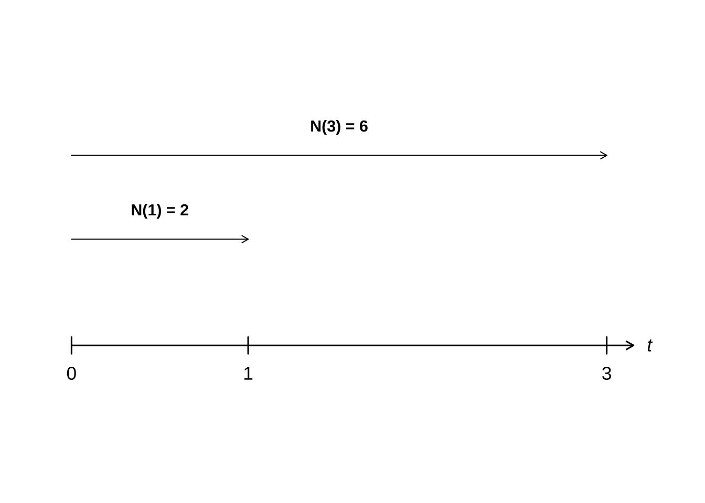
\[ P(N(3) = 6 | N(1) = 2) = P(N(2)=4) = \frac{e^{-(2\cdot 2)}\cdot(2 \cdot 2)^{4}}{4!} \approx 0.19 \]
Os valores calculados via dpois() são: \(P(N(1) = 2) \approx 0.2707\), \(P(N(1) = 2 \cap N(3) = 6) \approx 0.0529\), \(P(N(1) = 2 | N(3) = 6) \approx 0.3292\) e \(P(N(3) = 6 | N(1) = 2) \approx 0.1954\).
Exemplo 3: Pedidos chegam ao sistema de uma plataforma de e-commerce de acordo com um processo de Poisson com taxa \(\lambda = 3\) pedidos por minuto. Seja \(N(t)\) o número de pedidos recebidos até o instante \(t\). Quais são as probabilidades de que: 1. \(P(N(1) = 3)\): exatamente 3 pedidos em 1 minuto
2. \(P(N(1) = 3 \cap N(4) = 10)\): 3 pedidos no primeiro minuto e 10 pedidos nos primeiros 4 minutos
3. \(P(N(1) = 3 \mid N(4) = 10)\)
4. \(P(N(4) = 10 \mid N(1) = 3)\)
A primeira probabilidade é imediata:
\[\begin{align} P(N(1) = 3) &= \frac{e^{-3 \cdot 1}(3 \cdot 1)^3}{3!}\\ &= \frac{e^{-3} \cdot 27}{6}\\ &= 4,5\,e^{-3} \approx 0,2240 \end{align}\]
A segunda, pela independência dos incrementos em intervalos disjuntos:
\[\begin{align} P[N(1)=3 \cap N(4)=10] &= P[N(1)=3] \cdot P[N(4)-N(1)=7]\\ &= P[N(1)=3] \cdot P[N(3)=7]\\ &= \frac{e^{-(3\cdot 1)}(3\cdot 1)^{3}}{3!} \cdot \frac{e^{-(3\cdot 3)}(3\cdot 3)^{7}}{7!}\\ &= 0,2240 \cdot 0,1171 \approx 0,0262 \end{align}\]
em que \(N(4)-N(1)\) representa os pedidos recebidos no intervalo \((1,4]\), de duração 3 minutos.
A terceira, pela definição de probabilidade condicional \(P(A \mid B) = \frac{P(A \cap B)}{P(B)}\):
\[\begin{align} P(N(1) = 3 \mid N(4) = 10) &= \frac{P(N(1)=3 \cap N(4)=10)}{P(N(4)=10)} \end{align}\]
em que
\[ P(N(4) = 10) = \frac{e^{-(3\cdot 4)}\cdot(3\cdot 4)^{10}}{10!} = \frac{e^{-12}\cdot 12^{10}}{3628800} \approx 0,1048 \]
portanto
\[ P(N(1) = 3 \mid N(4) = 10) = \frac{0,0262}{0,1048} \approx 0,25 \]
A quarta: calcular \(P(N(4) = 10 \mid N(1) = 3)\) equivale a calcular a probabilidade de que ocorram 7 pedidos no intervalo \((1,4]\), de duração 3 minutos, i.e., \(P(N(4)-N(1)=7) = P(N(3)=7)\), pois os incrementos são independentes em um processo de Poisson. Ilustração:
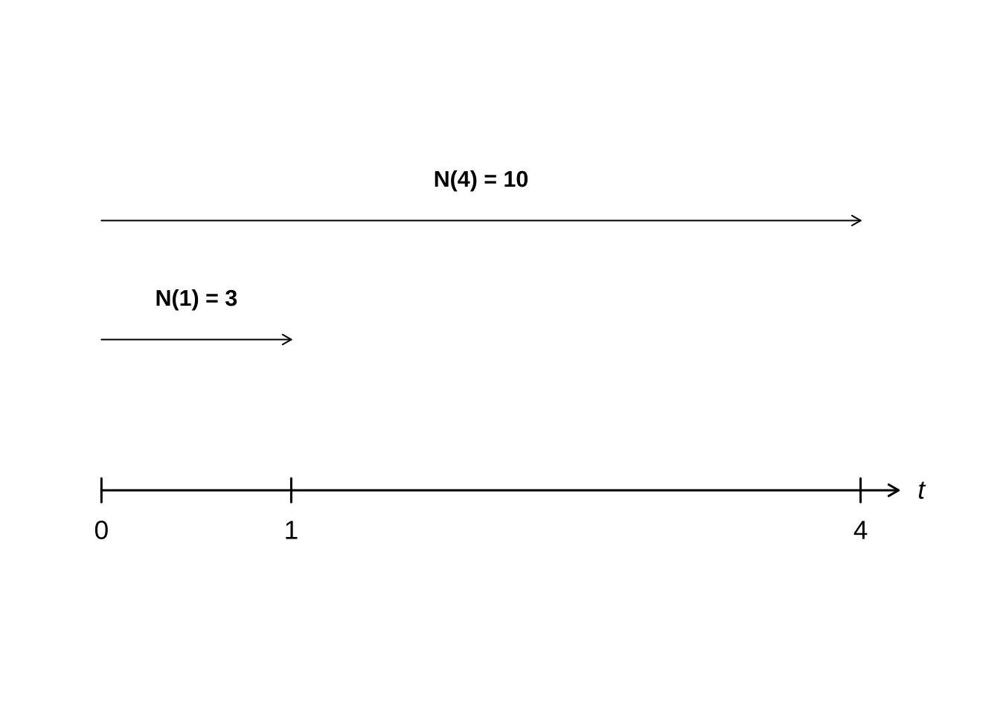
Figure 15.20: Ilustração do item 4 do Exemplo 3: N(1)=3 e N(4)=10
\[ P(N(4) = 10 \mid N(1) = 3) = P(N(3)=7) = \frac{e^{-(3\cdot 3)}\cdot(3\cdot 3)^{7}}{7!} \approx 0,1171 \]
Os valores calculados via dpois() são: \(P(N(1)=3) \approx 0.224\), \(P(N(1)=3 \cap N(4)=10) \approx 0.0262\), \(P(N(1)=3 \mid N(4)=10) \approx 0.2503\) e \(P(N(4)=10 \mid N(1)=3) \approx 0.1171\).
Exemplo 4: Clientes entram em uma loja de acordo com um processo de Poisson com taxa \(\lambda = 10\) por hora. De forma independente, cada cliente é classificado em dois tipos: compra alguma coisa com probabilidade \(p = 0,3\) ou sai da loja sem comprar nada com probabilidade \(1-p = 0,7\). Calcule a probabilidade de que durante a primeira hora 9 pessoas entrem na loja e, dentre essas 9 pessoas, 3 comprem alguma coisa e 6 não.
Como a classificação de cada cliente é independente dos demais e da ocorrência dos eventos, pelo resultado de decomposição do processo de Poisson, \(N_0(t)\) e \(N_1(t)\) são processos de Poisson independentes, em que \(N_0(t)\) representa o número de clientes que não compram nada até o tempo \(t\) e \(N_1(t)\) o número de clientes que compram até o tempo \(t\), com taxas respectivas \(\lambda_0 = (1-p)\lambda = 0,7 \cdot 10 = 7\) e \(\lambda_1 = p\lambda = 0,3 \cdot 10 = 3\). Como \(N(t) = N_0(t) + N_1(t)\), a condição de 9 clientes no total com 6 não-compradores e 3 compradores é equivalente a \(N_0(1)=6\) e \(N_1(1)=3\). A probabilidade pedida é portanto:
\[ P(N_0(1)=6 \cap N_1(1)=3) \]
em que \(N_0(1) \sim \text{Poisson}(\lambda_0=7)\) e \(N_1(1) \sim \text{Poisson}(\lambda_1=3)\).
\[\begin{align} P(N_0(1)=6 \cap N_1(1)=3) &= P(N_0(1)=6) \cdot P(N_1(1)=3)\\ &= \frac{e^{-7}\cdot 7^6}{6!} \cdot \frac{e^{-3}\cdot 3^3}{3!}\\ &\approx 0,1490 \cdot 0,2240\\ &\approx 0,0334 \end{align}\]
Dois aspectos merecem atenção. Primeiro, a fatoração da probabilidade conjunta em produto de probabilidades marginais é válida precisamente pela independência dos subprocessos \(N_0(t)\) e \(N_1(t)\), garantida pelo resultado de decomposição. Segundo, o total de 9 clientes não precisa ser imposto separadamente: ele está implícito na condição \(N_0(1)=6\) e \(N_1(1)=3\), pois \(N(1) = N_0(1) + N_1(1) = 9\).
O valor calculado via dpois() é: \(P(N_0(1)=6 \cap N_1(1)=3) \approx 0.0334\).
15.7.3.2 Processo de Poisson não-homogêneo
Quando a taxa de ocorrência varia com o tempo, escreve-se \(\lambda(t)\) e o processo é denominado não-homogêneo. O número esperado de eventos até o instante \(t\) é dado pela função de intensidade acumulada:
\[ \Lambda(t) = \int_0^t \lambda(s)\, ds \]
e a probabilidade de \(k\) eventos até o instante \(t\) é
\[
P(N(t) = k) = \frac{(\Lambda(t))^k\, e^{-\Lambda(t)}}{k!}
\]
Alguns exemplos de funções de intensidade \(\lambda(t)\) e suas respectivas funções acumuladas \(\Lambda(t)\) são:
- Linear: \(\lambda(t) = a + bt\), com \(a, b > 0\), modela uma taxa crescente no tempo, como o aumento gradual de acessos a um sistema ao longo do dia:
\[ \Lambda(t) = at + \frac{bt^2}{2} \]
- Periódica: \(\lambda(t) = a + b\sin\left(\frac{2\pi t}{T}\right)\), com \(a > b > 0\), modela oscilações regulares, como o fluxo de clientes em um supermercado com picos no almoço e no fim da tarde:
\[ \Lambda(t) = at - \frac{bT}{2\pi}\cos\left(\frac{2\pi t}{T}\right) + \frac{bT}{2\pi} \]
- Por partes: \(\lambda(t) = \lambda_i\) para \(t \in [t_{i-1}, t_i)\), modela situações em que a taxa é constante dentro de cada período mas difere entre períodos, como chamadas a uma central de atendimento em horário comercial e fora dele:
\[ \Lambda(t) = \sum_{i} \lambda_i \cdot (t_i - t_{i-1}) \]
Exemplo 5: O fluxo de clientes em um supermercado ao longo de um dia de funcionamento (8h às 20h, ou seja, \(t \in [0, 12]\) horas) é modelado por um processo de Poisson não-homogêneo com função de intensidade:
\[ \lambda(t) = 20 + 10\sin\left(\frac{\pi t}{6}\right) \]
em que \(t\) é medido em horas a partir da abertura e \(\lambda(t)\) em clientes por hora. Calcule:
- \(\Lambda(t)\): o número esperado de clientes até o instante \(t\)
- \(\Lambda(12)\): o número esperado de clientes ao longo de todo o dia
- \(P(N(4) \leq 100)\): a probabilidade de até 100 clientes nas primeiras 4 horas
- \(P(100 \leq N(4) \leq 120)\): a probabilidade de entre 100 e 120 clientes nas primeiras 4 horas
A função \(\lambda(t) = 20 + 10\sin\left(\frac{\pi t}{6}\right)\) é adequada ao contexto porque: a taxa mínima é \(\lambda = 10\) clientes/hora (quando \(\sin = -1\), i.e., \(t = 9\) h, às 17h); a taxa máxima é \(\lambda = 30\) clientes/hora (quando \(\sin = 1\), i.e., \(t = 3\) h, ao meio-dia); e a taxa média é \(\lambda = 20\) clientes/hora.
Item 1: integrando \(\lambda(t)\):
\[\begin{align} \Lambda(t) &= \int_0^t \left[20 + 10\sin\left(\frac{\pi s}{6}\right)\right] ds\\ &= \left[20s - \frac{60}{\pi}\cos\left(\frac{\pi s}{6}\right)\right]_0^t\\ &= 20t - \frac{60}{\pi}\cos\left(\frac{\pi t}{6}\right) + \frac{60}{\pi}\\ &= 20t + \frac{60}{\pi}\left[1 - \cos\left(\frac{\pi t}{6}\right)\right] \end{align}\]
Item 2: substituindo \(t = 12\):
\[\begin{align} \Lambda(12) &= 20 \cdot 12 + \frac{60}{\pi}\left[1 - \cos(\pi)\right]\\ &= 240 + \frac{60}{\pi}\left[1 - (-1)\right]\\ &= 240 + \frac{120}{\pi}\\ &\approx 240 + 38,20 \approx 278,20 \end{align}\]
Item 3: calculando \(P(N(4) \leq 100)\), com \(\Lambda(4) \approx 108,6479\):
\[ P(N(4) \leq 100) = \sum_{k=0}^{100} \frac{(108,6479)^{k}\, e^{-108,6479}}{k!} \approx 0,2190035 \]
Item 4: calculando \(P(100 \leq N(4) \leq 120)\):
\[ P(100 \leq N(4) \leq 120) = P(N(4) \leq 120) - P(N(4) \leq 99)\\ \sum_{k=0}^{120} \frac{(108,6479)^{k}\, e^{-108,6479}}{k!} - \sum_{k=0}^{99} \frac{(108,6479)^{k}\, e^{-108,6479}}{k!} \approx 0.6803769 \]
Os valores calculados via ppois() são: \(\Lambda(12) \approx 278.2\), \(\Lambda(4) \approx 108.65\), \(P(N(4) \leq 100) \approx 0.219\) e \(P(100 \leq N(4) \leq 120) \approx 0.6804\).
15.7.3.3 Processo de Poisson composto
No processo de Poisson composto, cada evento contribui com uma quantidade aleatória \(Y_i\), e o processo acumulado é
\[ X(t) = \sum_{i=1}^{N(t)} Y_i \]
em que \(N(t)\) é um processo de Poisson e \(Y_i\) são variáveis aleatórias independentes e identicamente distribuídas. Esse modelo é amplamente utilizado em seguros e finanças: \(N(t)\) representa o número de sinistros ocorridos até o instante \(t\) e \(Y_i\) representa o valor de cada sinistro.
Exemplo 6: Sinistros chegam a uma seguradora de acordo com um processo de Poisson com taxa \(\lambda = 5\) sinistros por dia. O valor de cada sinistro, em milhares de reais, é uma variável aleatória independente com distribuição exponencial de média \(\mu = 10\), isto é, \(Y_i \sim \text{Exponencial}(1/10)\). Seja \(X(t) = \sum_{i=1}^{N(t)} Y_i\) o valor acumulado de sinistros até o instante \(t\). Calcule: 1. \(E[X(t)]\): o valor esperado acumulado até o instante \(t\) 2. \(\text{Var}[X(t)]\): a variância do valor acumulado até o instante \(t\) 3. \(E[X(7)]\): o valor esperado acumulado ao longo de uma semana 4. \(\text{Var}[X(7)]\): a variância do valor acumulado ao longo de uma semana
Para o processo de Poisson composto, as expressões gerais são:
\[ E[X(t)] = \lambda t \cdot E[Y_i] \]
\[ \text{Var}[X(t)] = \lambda t \cdot E[Y_i^2] \]
em que, para \(Y_i \sim \text{Exponencial}(1/10)\): \(E[Y_i] = 10\) e \(E[Y_i^2] = \text{Var}[Y_i] + (E[Y_i])^2 = 100 + 100 = 200\).
Item 1:
\[ E[X(t)] = 5t \cdot 10 = 50t \]
Item 2:
\[ \text{Var}[X(t)] = 5t \cdot 200 = 1000t \]
Item 3: substituindo \(t = 7\):
\[ E[X(7)] = 50 \cdot 7 = 350 \text{ mil reais} \]
Item 4: substituindo \(t = 7\):
\[ \text{Var}[X(7)] = 1000 \cdot 7 = 7000 \text{ (mil reais)}^2 \]
portanto o desvio padrão é \(\sqrt{7000} \approx 83,67\) mil reais.
Os valores calculados são: \(E[X(7)] = 350\) mil reais, \(\text{Var}[X(7)] = 7000\) (mil reais)\(^2\) e desvio padrão \(= 83.67\) mil reais.
15.7.4 Tempo de espera em um processo de Poisson
Seja \(\{N_t : t \geq 0 \}\) um processo de Poisson com taxa \(\lambda\):
- denota-se por \(T_{n}\) o tempo entre a \((n − 1)\) e a \(n\)-ésima ocorrência de eventos, sendo \(T_{1}\) o tempo até a primeira ocorrência
- a sequência \(T_{n}, n=1,2,...\) é a chamada sequência de tempos entre ocorrências (ou entre chegadas)
Proposição: \(T_{1},T_{2},...\) são variáveis aleatórias IID com distribuição exponencial de parâmetro \(\lambda\).
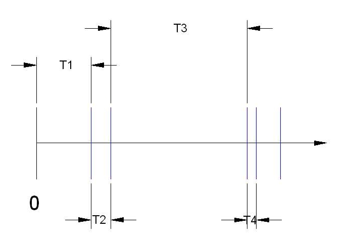
Figure 15.21: Os tempos de espera entre cada observação não são constantes.
import numpy as np
import matplotlib
matplotlib.use('Agg')
import matplotlib.pyplot as plt
from scipy.stats import expon
#A função *`generate_poisson_events`* simula um *Processo de Poisson*, gerando um número aleatório de eventos com taxa média `rate` em um intervalo de duração `time_duration`, retornando o número total de eventos, os tempos ordenados de ocorrência e os intervalos entre eventos consecutivos.
def generate_poisson_events(rate, time_duration):
num_events = np.random.poisson(rate * time_duration)
event_times = np.sort(np.random.uniform(0, time_duration, num_events))
inter_arrival_times = np.diff(event_times)
return num_events, event_times, inter_arrival_times
# A função *`plot_non_sequential_poisson`* visualiza um *Processo de Poisson*, exibindo em dois gráficos o tempo cumulativo dos eventos (em uma curva de passos) e o histograma dos intervalos entre eventos, destacando a distribuição exponencial dos tempos de espera, com taxa média `rate` e duração total `time_duration`.
def plot_non_sequential_poisson(num_events, event_times, inter_arrival_times, rate, time_duration):
fig, axs = plt.subplots(1, 2, figsize=(14, 5))
fig.suptitle(f'Simulação de um Processo de Poisson (λ = {rate}, Duração = {time_duration} segundos)\n', fontsize=14)
# Gráfico 1: Tempo dos Eventos
axs[0].step(event_times, np.arange(1, num_events + 1), where='post', color='blue')
axs[0].set_xlabel('Tempo (s)')
axs[0].set_ylabel('Número de Eventos')
axs[0].set_title(f'Evolução Incremental dos Eventos no Tempo\nN(t) é crescente\nTotal: {num_events} eventos\n', fontsize=12)
axs[0].grid(True)
# Gráfico 2: Histograma dos Tempos de Espera
axs[1].hist(inter_arrival_times, bins=20, density=True, color='green', alpha=0.5, label='Dados Empíricos')
axs[1].set_xlabel('Tempo de Espera entre Eventos (s)')
axs[1].set_ylabel('Densidade')
axs[1].set_title(
f'Distribuição dos Tempos de Espera entre Eventos\nE(T): {1/rate:.2f}, Sd(T): {np.std(inter_arrival_times):.2f}',
fontsize=12
)
axs[1].grid(True, alpha=0.5)
# Sobreposição da curva exponencial teórica
lambda_param = rate
x = np.linspace(0, max(inter_arrival_times), 100)
y = expon.pdf(x, scale=1/lambda_param)
axs[1].plot(x, y, 'r-', lw=2, label=f'Modelo Exponencial (λ={lambda_param:.2f})')
# Legenda
axs[1].legend()
# Ajustar espaçamento entre gráficos
plt.subplots_adjust(left=0.08, right=0.95, top=0.85, bottom=0.1, wspace=0.3)
# Ajustar layout final
plt.tight_layout()
plt.show()
# A função *`plot_sequential_poisson`* visualiza múltiplos *Processos de Poisson* com diferentes taxas `rate`, exibindo em dois gráficos a evolução cumulativa dos eventos no tempo e os histogramas dos intervalos entre eventos, destacando a distribuição exponencial dos tempos de espera para cada taxa ao longo de uma duração definida `time_duration`.
def plot_sequential_poisson(num_events_list, event_times_list, inter_arrival_times_list, rate, time_duration):
fig, axs = plt.subplots(1, 2, figsize=(14, 5))
fig.suptitle(f'Simulação de Processos de Poisson com diferentes λ (Duração = {time_duration} segundos)\n', fontsize=14)
# Gráfico 1: Tempo dos Eventos
axs[0].set_xlabel('Tempo (s)')
axs[0].set_ylabel('Número de Eventos')
axs[0].set_title(f'Evolução Incremental dos Eventos no Tempo \nN(t) é crescente', fontsize=12)
axs[0].grid(True)
# Gráfico 2: Histograma dos Tempos de Espera
axs[1].set_xlabel('Tempo de Espera entre Eventos (s)')
axs[1].set_ylabel('Densidade')
axs[1].set_title(f'Distribuição dos Tempos de Espera: T(n) ~ Exp\n E(T)=1/λ, Sd(T)=sqrt(1/λ²)', fontsize=12)
axs[1].grid(True, alpha=0.5)
color_palette = plt.get_cmap('tab20')
colors = [color_palette(i) for i in range(len(rate))]
for n, individual_rate in enumerate(rate):
num_events = num_events_list[n]
event_times = event_times_list[n]
inter_arrival_times = inter_arrival_times_list[n]
# Gráfico 1: Curva de passos para os tempos de chegada
axs[0].step(event_times, np.arange(1, num_events + 1), where='post', color=colors[n],
label=f'λ = {individual_rate}, Total: {num_events}')
# Gráfico 2: Histograma dos tempos entre eventos
axs[1].hist(inter_arrival_times, bins=20, density=True, color=colors[n], alpha=0.5,
label=f'λ = {individual_rate}, E(T): {1/individual_rate:.2f}, Sd(T): {np.std(inter_arrival_times):.2f}')
# Sobreposição da curva exponencial teórica
x = np.linspace(0, max(inter_arrival_times), 100)
y = expon.pdf(x, scale=1/individual_rate)
axs[1].plot(x, y, color=colors[n], lw=2, linestyle='--', label=f'Modelo Exp (λ={individual_rate:.2f})')
axs[0].legend(loc='upper left', fontsize=9)
axs[1].legend(loc='upper right', fontsize=9)
# Ajustar espaçamento entre gráficos
plt.subplots_adjust(left=0.08, right=0.95, top=0.85, bottom=0.1, wspace=0.3)
# Ajustar layout final
plt.tight_layout()
plt.show()
# A função *`poisson_simulation`* simula um ou vários *Processos de Poisson*, dependendo se `rate` é um valor único (int) ou uma lista de taxas, gerando tempos de ocorrência e intervalos entre eventos; além disso, visualiza os resultados por meio de gráficos que exibem a evolução temporal dos eventos e a distribuição dos tempos de espera ao longo de um intervalo definido por `time_duration`.
def poisson_simulation(rate, time_duration, show_visualization=True):
if isinstance(rate, int):
num_events, event_times, inter_arrival_times = generate_poisson_events(rate, time_duration)
if show_visualization:
fig = plt.figure(figsize=(14, 6)) # Aumentar tamanho da figura
plot_non_sequential_poisson(num_events, event_times, inter_arrival_times, rate, time_duration)
fig.set_tight_layout(True) # Ajuste automático do layout
else:
return num_events, event_times, inter_arrival_times
elif isinstance(rate, list):
num_events_list = []
event_times_list = []
inter_arrival_times_list = []
for individual_rate in rate:
num_events, event_times, inter_arrival_times = generate_poisson_events(individual_rate, time_duration)
num_events_list.append(num_events)
event_times_list.append(event_times)
inter_arrival_times_list.append(inter_arrival_times)
if show_visualization:
fig = plt.figure(figsize=(18, 8)) # Maior espaço para gráficos sequenciais
plot_sequential_poisson(num_events_list, event_times_list, inter_arrival_times_list, rate, time_duration)
fig.set_tight_layout(True) # Ajuste automático do layout
else:
return num_events_list, event_times_list, inter_arrival_times_list
Nas simulações a seguir confirma-se empiricamente que a evolução incremental da contagem de eventos ao longo do tempo (a variável aleatória \(N(t)\)) é crescente e a distribuição dos tempos de espera (a variável aleatória \(T_n\)) entre eventos segue um modelo exponencial com parâmetro \(\lambda\) (código adaptado de link).
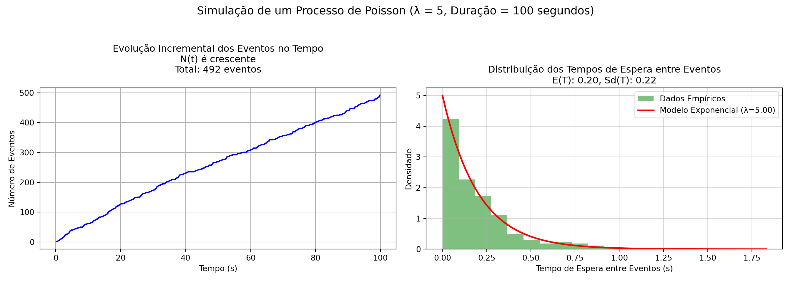
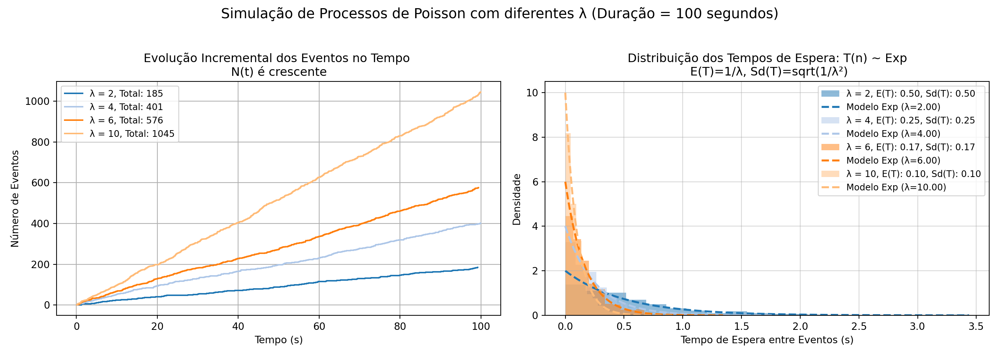
Exemplo 7: Em um sistema de atendimento telefônico, as chamadas chegam de acordo com um processo de Poisson com taxa média de chegada de λ=3 chamadas por minuto. Responda:
1) Qual é a probabilidade de que ocorram exatamente 2 chamadas em um intervalo de 1 minuto?
2) Qual a probabilidade do tempo entre chamadas ser menor que 20 segundos?
3) Sabendo que o sistema comporta sem interrupção o atendimento de até 6 chamadas por minuto, qual é a probabilidade do sistema apresentar falhas?
4) Sabendo que o sistema comporta sem interrupção o atendimento com um intervalo mínimo de 15 segundos entre elas, qual é a probabilidade do sistema apresentar falhas?
- A probabilidade de ocorrerem exatamente \(k = 2\) chamadas em 1 minuto é dada pela fórmula da distribuição de Poisson:
\[ P(N(t) = k) = \frac{(\lambda t)^k e^{-\lambda t}}{k!}\\ P(N(1) = 2) = \frac{(3 \cdot 1)^2 e^{-3}}{2!}\\ P(N(1) = 2) = \frac{9 e^{-3}}{2}\\ P(N(1) = 2) \approx \frac{9 \cdot 0.0498}{2} = 0.2241 \]
- A probabilidade de tempo entre chamadas ser menor que 20 segundos é
\[ P(T \leq t) = 1 - e^{-\lambda t}\\ P(T \leq 1/3) = 1 - e^{-3 \cdot \frac{1}{3}}\\ P(T \leq 1/3) \approx 1 - 0.3679 = 0.6321 \]
- Sabendo que o sistema comporta sem interrupção o atendimento de até 6 chamadas por minuto, a interrupção ocorrerá quando há mais de 6 chamadas no intervalo de 1 minuto, e a probabilidade disso ocorrer é
\[ P(N(1) > 6) = 1 - P(N(1) \leq 6)\\ P(N(1) > 6 ) = 1- \sum_{k=0}^{6} \frac{3^k e^{-3}}{k!}\\ P(N(1) > 6 ) \approx 1- 0.967\\ P(N(1) > 6 ) \approx 0.033\\ \]
- Sabendo que o sistema comporta sem interrupção o atendimento com um intervalo mínimo de 15 segundos entre chamadas consecutivas, a interrupção ocorrerá quando o sistema receber chamadas com um intervalo menor que 15 s e essa probabilidade será
\[ P(T \leq t) = 1 - e^{-\lambda t}\\ P(T \leq 0.25) = 1 - e^{-3 \cdot 0.25}\\ P(T \leq 0.25) = 1 - e^{-0.75}\\ P(T \leq 0.25) \approx 1 - 0.4724 \\ P(T \leq 0.25) \approx 0.5276 \]
Esses resultados ilustram que:
- É improvável que o sistema falhe devido a mais de 6 chamadas em 1 minuto.
- Há uma alta probabilidade de falha devido a intervalos muito curtos entre chamadas consecutivas.
Os valores calculados são: \(P(N(1)=2) \approx 0.224\), \(P(T \leq 1/3) \approx 0.6321\), \(P(N(1) > 6) \approx 0.0335\) e \(P(T \leq 0,25) \approx 0.5276\).
15.7.5 Distribuição condicional dos tempos de chegada
Considere \(N(t), t \geq 0\) com taxa \(\lambda\). Sabendo-se a priori que um evento ocorreu exatamente no intervalo \((0, t]\), qual a distribuição do tempo até a ocorrência desse evento?
Ou seja, desejamos calcular a probabilidade do evento ter ocorrido em intervalo de tempo \(s\) dado que ocorreu um evento no intervalo \(t\), sendo \(s \leq t\)
\[ P(T_1 < s \mid N(t) = 1), \, s \leq t. \]
Pela hipótese de incrementos independentes e estacionários demonstra-se (Sheldon Ross, in Introduction to Probability Models, \(6^{a}\) ed., Cap. 5) que a distribuição é uniforme no intervalo \((0, t]\) e pode-se verificar que
\[ P(T_1 < s \mid N(t) = 1) = \frac{s}{t}, \, s \leq t. \]
Exemplo 8: Em um sistema de atendimento telefônico, as chamadas chegam de acordo com um processo de Poisson com taxa média de chegada de λ=3 chamadas por minuto. Dado que ocorreu 1 chamada em 1 minuto, qual é a probabilidade de que o tempo de espera para a primeira chamada seja inferior a 20 segundos?
A probabilidade de que o tempo de espera para a primeira chamada seja inferior a \(s=\frac{1}{3} min\) dado que ocorreu 1 chamada em \(t=1min\) segue uma distribuição uniforme
\[
P(T_1 < s \mid N(t) = 1) = \frac{s}{t}, \, s \leq t.\\
P(T_1 < \frac{1}{3} \mid N(t=1) = 1) = \frac{\frac{1}{3}}{1}\\
P(T_1 < \frac{1}{3} \mid N(t=1) = 1) \approx 0.333
\]
O valor calculado é: \(P\left(T_1 < \frac{1}{3} \mid N(1) = 1\right) = 0.3333\).
15.8 Simulações Monte Carlo
15.8.1 Introdução
O Método de Monte Carlo, desenvolvido na década de 1940 por Stanislaw Ulam durante seu trabalho no Los Alamos National Laboratory, surgiu como uma ferramenta para simular processos probabilísticos (uma ideia semelhante já havia sido utilizada por Enrico Fermi no estudo da difusão de nêutrons, mas nunca foi publicada). John von Neumann aprimorou o método, implementando-o no ENIAC, o primeiro computador programável da história.
É uma técnica matemática computacional amplamente utilizada para modelar e analisar sistemas complexos, frequentemente caracterizados por elevadas variabilidade e incerteza, nos quais os cálculos analíticos diretos seriam inviáveis devido ao grande número de variáveis ou à complexidade matemática envolvida.
Baseiam-se na amostragem (ou geração) de valores aleatórios (estritamente falando, pseudoaleatórios), obtidos por algoritmos determinísticos - dentro de intervalos plausíveis para variáveis de entrada ie., suas distribuições de probabilidade específicas.
As distribuições de probabilidade podem ser determinadas por:
- dados de séries temporais;
- estimativas de especialistas;
- conhecimento prévio.
Cada simulação realizada gera um resultado e, ao serem repetidas um grande número de vezes, esses resultados agregados permitem a aproximação dos parâmetros da distribuição de probabilidade do fenômeno.
A geração de valores aleatórios confiáveis é essencial para que os resultados sejam estatisticamente robustos, garantindo que as simulações ofereçam estimativas precisas e representativas.
Aplicadas em áreas como finanças, engenharia, física e ciência de dados, permitindo a previsão de cenários, a análise de riscos e a otimização de decisões sob incerteza.
A CDF desempenha um papel importante nas Simulações Monte Carlo. A função de distribuição cumulativa (CDF) dá a probabilidade de que a variável aleatória seja menor ou igual a um valor específico.
15.8.2 Fundamentação
A Lei dos Grandes Números afirma que, à medida que o número de amostras aumenta, a média das observações converge para o valor esperado:
\[ \bar{X}_n = \frac{1}{n} \sum_{i=1}^{n} X_i \to \mathbb{E}[X] \text{ quando } n \to \infty \]
O Teorema do Limite Central afirma que, para um número suficientemente grande de amostras independentes e identicamente distribuídas (i.i.d), a soma das variáveis converge em distribuição a uma distribuição Normal:
\[ \frac{\sum_{i=1}^{n} X_i - n \mu}{\sqrt{n} \sigma} \xrightarrow{d} N(0,1) \]
em que:
- \(\mu\): média da variável aleatória
- \(\sigma\): desvio padrão
Esses teoremas garantem que métodos de Monte Carlo produzam aproximações confiáveis conforme se aumente o número de simulações.
15.8.3 Números Aleatórios e Pseudoaleatórios
Os números verdadeiramente aleatórios são gerados a partir de processos físicos imprevisíveis, como ruído térmico ou decaimento radioativo. Esses métodos são difíceis de implementar computacionalmente devido ao custo e à dificuldade de captura dos fenômenos físicos.
Os números pseudoaleatórios são gerados por algoritmos determinísticos que produzem sequências que se assemelham à aleatoriedade. Um dos métodos mais comuns é o Gerador Linear Congruente (Linear Congruential Generator – LCG), cuja fórmula matemática é dada por:
\[ X_{i+1} = (a X_i + c) \mod m \]
em que:
- \(X_i\): Valor atual da sequência
- \(a\): Multiplicador
- \(c\): Incremento
- \(m\): Módulo (resto)
- \(X_0\): Semente inicial
O módulo (\(m\)) é o valor pelo qual a expressão \((a X_i + c)\) é dividida, e o resto dessa divisão é o próximo número gerado na sequência. Considere como exemplo o LCG com parâmetros \(a=9\), \(c=1\), \(m=17\) e semente \(X_0=7\). O primeiro número aleatório (\(X_0=7\)) será
\[\begin{align} X_{0} & = 7 \\ X_{1} & = (a X_0 + c) \mod m X_{1} & = (9*7+1) \mod 17 \\ X_{1} & = 64 \mod 17 \\ X_{1} & = 13 \\ \end{align}\]
uma vez que \(\frac{64}{17} \approx 3,76\) e tomando-se \(64-(3*17)=13\). Assim \(X_{1} = 13\).
A sequência é então normalizada para o intervalo \([0, 1)\) fazendo-se
\[ U_i = \frac{X_{i+1}}{m} \]
No exemplo anterior teríamos:
\[\begin{align} U_i & = \frac{X_{i+1}}{m}\\ U_0 & = \frac{X_{1}}{m}\\ U_0 & = \frac{13}{17}\\ U_0 & = 0,76471\\ \end{align}\]
Essa normalização é essencial para aplicações que requerem números pseudoaleatórios no intervalo \([0, 1)\) como as CDF.
O método LCG é determinístico, ou seja, dada uma mesma semente inicial (\(X_0\)), ele produzirá sempre a mesma sequência. Isso pode ser problemático em contextos onde a imprevisibilidade é desejada.
O LCG a seguir foi adaptado de link):
from typing import Iterator, List
# Função correta do Gerador Linear Congruente (LCG)
def linear_congruential_generator(m: int, a: int, c: int, seed: int) -> Iterator[int]:
"""
Implementa o Gerador Linear Congruente (LCG) para gerar números pseudoaleatórios.
Parâmetros:
- m: Módulo (define o intervalo dos números gerados).
- a: Multiplicador (controla a dispersão dos números).
- c: Incremento.
- seed: Valor para iniciar a sequência.
Retorna:
- Um iterador que gera números inteiros pseudoaleatórios entre 0 e m-1.
"""
x = seed # Inicializa a sequência com a semente fornecida
while True:
yield x # Retorna o valor atual de x
x = (a * x + c) % m # Calcula o próximo valor na sequência usando a fórmula do LCG
# Função para gerar uma lista de números pseudoaleatórios
def generate_lcg_samples(n_samples: int, m: int, a: int, c: int, seed: int) -> List[int]:
"""
Gera uma lista de `n_samples` números pseudoaleatórios não normalizados usando o método do Gerador Linear Congruente (LCG).
Parâmetros:
- n_samples: Número de amostras a serem geradas.
- m: Módulo do LCG.
- a: Multiplicador do LCG.
- c: Incremento do LCG.
- seed: Semente inicial.
Retorna:
- Uma lista de números inteiros pseudoaleatórios entre 0 e m-1.
"""
gen = linear_congruential_generator(m, a, c, seed) # Inicializa o gerador corretamente
return [next(gen) for _ in range(n_samples)] # Coleta n_samples números
Gerando números pseudoaleatórios com valores \(m = 16\), \(a = 11\), \(c = 0\), \(seed=1\):
# Parâmetros do LCG com ciclo visível
m = 16 # Módulo pequeno para demonstrar a repetibilidade
a = 11 # Multiplicador
c = 0 # Incremento
seed = 1 # Semente inicial X0
n_samples = 200 # Número de amostras para observar o ciclo completo
# Gerar números com o LCG (não normalizados)
lcg_samples = generate_lcg_samples(n_samples, m, a, c, seed)
# Exibir os números gerados
# print(lcg_samples)
# Função para gerar uma sequência de números pseudoaleatórios normalizados no intervalo [0,1)
def lcg_normalized(n_samples: int, m: int, a: int, c: int, seed: int = 1) -> list[float]:
"""
Gera uma sequência de números pseudoaleatórios normalizados no intervalo [0,1)
usando o Gerador Linear Congruente (LCG).
Parâmetros:
- n_samples: Número de amostras a serem geradas.
- m: Módulo do LCG.
- a: Multiplicador do LCG.
- c: Incremento do LCG.
- seed: Valor para iniciar a sequência.
Retorna:
- Uma lista de números float no intervalo [0,1).
"""
gen = linear_congruential_generator(m, a, c, seed) # Inicializa o gerador LCG
sequence = [] # Lista para armazenar os números normalizados
# Gera os números pseudoaleatórios normalizados
for _ in range(n_samples):
rand: float = next(gen) / m # Normaliza o número gerado para o intervalo [0, 1)
sequence.append(rand) # Adiciona o número normalizado à sequência
return sequence # Retorna a lista completa de números normalizados
Gerando números pseudoaleatórios com valores \(m = 16\), \(a = 11\), \(c = 0\), \(seed=1\):
# Parâmetros do LCG com ciclo visível
m = 16 # Módulo pequeno para demonstrar a repetibilidade
a = 11 # Multiplicador
c = 0 # Incremento
seed = 1 # Semente inicial X0
n_samples = 100 # Número de amostras para observar o ciclo completo
# Gerar números com o LCG (normalizados)
lcg_samples_norm = lcg_normalized(n_samples, m, a, c, seed)
# Exibir os números gerados
#print(lcg_samples_norm)
A escolha arbitrária de \(m,a,c\) resulta em valores em um ciclo de repetibilidade previsível conforme os gráficos a seguir mostram:
import numpy as np
import matplotlib.pyplot as plt
# Criar índice para os pontos gerados
indices = np.arange(n_samples)
# Criar subplots lado a lado
fig, axes = plt.subplots(1, 2, figsize=(14, 5))
# Gráfico 1: Dispersão para observar padrão periódico
axes[0].scatter(indices, lcg_samples_norm, s=50, alpha=0.7, color='blue') # Corrigido: índices no eixo X
axes[0].set_title('Distribuição de Números Pseudoaleatórios \n(Ciclo Repetitivo)')
axes[0].set_xlabel('Índice da Sequência')
axes[0].set_ylabel('Números gerados (0 a 1)')
axes[0].grid(True)
# Gráfico 2: Barras para visualizar periodicidade
axes[1].bar(indices, lcg_samples_norm, color='gray', edgecolor='black')
axes[1].set_title('Gráfico de Barras \n(Ciclo Evidenciado)')
axes[1].set_xlabel('Índice da Sequência')
axes[1].set_ylabel('Números gerados (0 a 1)')
axes[1].grid(True)
# Ajustar layout para melhor visualização
plt.tight_layout()
plt.show()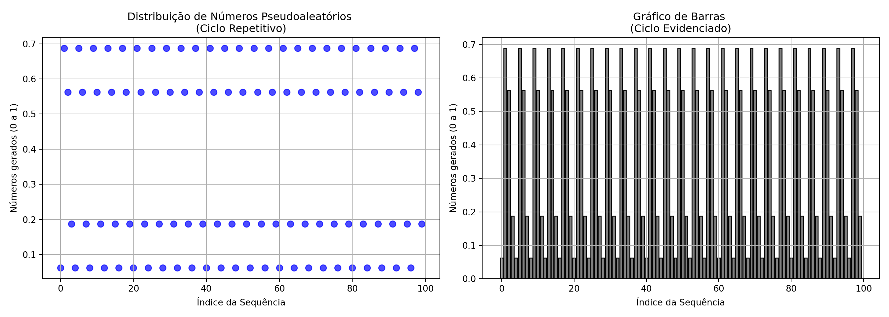
De acordo com Donald Knuth (The Art Of Computer Programming), um gerador pseudoaleatório linear produz um período máximo se as seguintes condições forem satisfeitas:
- Se \(p\) é um número primo que divide \(m\), então \(p\) deve dividir \(a - 1\).
- Se \(m\) é múltiplo de 4, então \(a-1\) também deve ser múltiplo de 4.
- O único número inteiro que divide exatamente \(a\) e \(m\) deve ser 1 (ou seja, \(a\) e \(m\) devem ser coprimos).
Essas condições garantem um período máximo e uma boa distribuição dos números gerados.
Considerando os parâmetros escolhidos:
- \(m = 2^{31} = 2\,147\,483\,648\)
- \(a = 594\,156\,893\)
- \(c = 0\)
verificamos as três condições:
Se \(p\) é um número primo que divide \(m\), então \(p\) deve dividir \(c\). Como \(m = 2^{31}\), o único primo que o divide é \(p = 2\). Como \(c = 0\), \(p\) divide \(c\), satisfazendo a condição.
Se \(m\) é múltiplo de 4, então \(a-1\) também deve ser múltiplo de 4. Como \(m = 2^{31}\) é múltiplo de 4, verificamos se \(a - 1\) também é múltiplo de 4:
\[ a - 1 = 594\,156\,893 - 1 = 594\,156\,892 \]
Como \(594\,156\,892 \div 4\) é inteiro, a condição é satisfeita. O único número inteiro que divide exatamente \(a\) e \(m\) deve ser 1 (ou seja, \(a\) e \(m\) devem ser coprimos). Calculamos o máximo divisor comum \(\gcd(a, m)\), obtendo:
\[ \gcd(594\,156\,893, 2^{31}) = 1 \]
isso confirma que \(a\) e \(m\) são coprimos, atendendo à terceira condição. Portanto, os parâmetros escolhidos atendem às condições de Knuth, garantindo que o gerador linear congruencial produzirá uma sequência aperiódica.
# Definição dos parâmetros em acordo com Knuth
m: int = 2_147_483_648 # Define o módulo (2^31), garantindo um grande período de números únicos
a: int = 594_156_893 # Define o multiplicador, cuidadosamente escolhido para evitar ciclos curtos
c: int = 0 # Incremento igual a zero, caracterizando um gerador multiplicativo
seed: int = 1 # Define o número inicial
n_samples: int = 200 # Número de amostras para observar o ciclo completo
# Gerar números com o LCG (normalizados)
lcg_samples_norm = lcg_normalized(n_samples, m, a, c, seed)
A escolha desses parâmetros resulta em valores em um ciclo de repetibilidade muito menos previsível conforme os gráficos a seguir mostram:
import numpy as np
import matplotlib.pyplot as plt
# Criar índice para os pontos gerados
indices = np.arange(n_samples)
# Criar subplots lado a lado
fig, axes = plt.subplots(1, 2, figsize=(14, 5))
# Gráfico 1: Dispersão para observar padrão periódico
axes[0].scatter(indices, lcg_samples_norm, s=50, alpha=0.7, color='blue') # Corrigido: índices no eixo X
axes[0].set_title('Distribuição de Números Pseudoaleatórios \n(Parâmetros de Knuth)')
axes[0].set_xlabel('Índice da Sequência')
axes[0].set_ylabel('Números gerados (0 a 1)')
axes[0].grid(True)
# Gráfico 2: Barras para visualizar periodicidade
axes[1].bar(indices, lcg_samples_norm, color='gray', edgecolor='black')
axes[1].set_title('Gráfico de Barras \n(Baixa Periodicidade)')
axes[1].set_xlabel('Índice da Sequência')
axes[1].set_ylabel('Números gerados (0 a 1)')
axes[1].grid(True)
# Ajustar layout para melhor visualização
plt.tight_layout()
plt.show()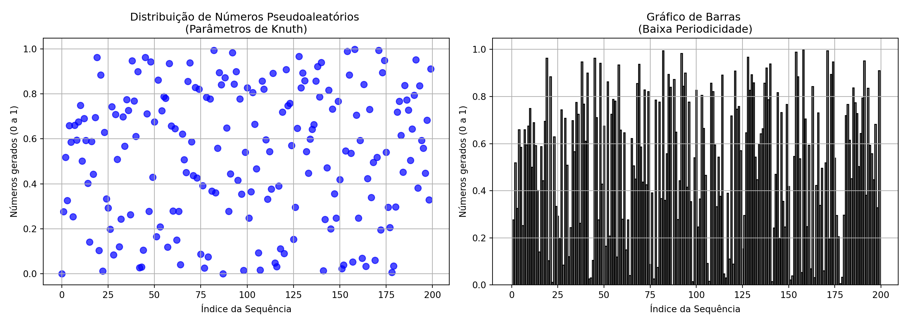
Números aleatórios numa faixa específica [a,b]
Para gerar números aleatórios em uma faixa diferente de 0 e 1 usando um gerador linear congruente, você deve ajustar os parâmetros de normalização.
Especificamente, para obter números em um intervalo \([a, b]\), você deve multiplicar o número gerado (que está inicialmente entre 0 e 1) pela amplitude do intervalo \(b - a\) e, em seguida, somar o valor mínimo do intervalo a.
# Gerar números pseudoaleatórios normalizados no intervalo [0,1)
m: int = 2_147_483_648 # Define o módulo (2^31), garantindo um grande período de números únicos
a: int = 594_156_893 # Define o multiplicador, cuidadosamente escolhido para evitar ciclos curtos
c: int = 0 # Incremento igual a zero, caracterizando um gerador multiplicativo
seed: int = 1 # Define o número inicial
n_samples: int = 200 # Número de amostras para observar o ciclo completo
# Gerar números com o LCG (normalizados)
lcg_samples_norm = lcg_normalized(n_samples, m, a, c, seed)
# Faixa desejada
a_range = 1 # Novo limite inferior
b_range = 3 # Novo limite superior
# Transformar os números normalizados para a nova faixa [a_range, b_range]
lcg_samples_ab = [a_range + x * (b_range - a_range) for x in lcg_samples_norm]
# Criar índices para os pontos gerados
indices = np.arange(len(lcg_samples_norm))
indices_b = np.arange(len(lcg_samples_ab))
# Criar subplots lado a lado
fig, axes = plt.subplots(1, 2, figsize=(14, 5))
# Gráfico 1: Dispersão dos números em [0,1]
axes[0].scatter(indices, lcg_samples_norm, s=50, alpha=0.7, color='blue')
axes[0].set_title('Distribuição de Números Pseudoaleatórios em [0,1]')
axes[0].set_xlabel('Índice da Sequência')
axes[0].set_ylabel('Números gerados em [0,1]')
axes[0].grid(True)
# Gráfico 2: Dispersão dos números em [a_range,b_range]
axes[1].scatter(indices_b, lcg_samples_ab, s=50, alpha=0.7, color='blue')
axes[1].set_title('Distribuição de Números Pseudoaleatórios em [1,3]')
axes[1].set_xlabel('Índice da Sequência')
axes[1].set_ylabel('Números gerados em [1,3]')
axes[1].grid(True)
# Ajustar layout
plt.tight_layout()
plt.show()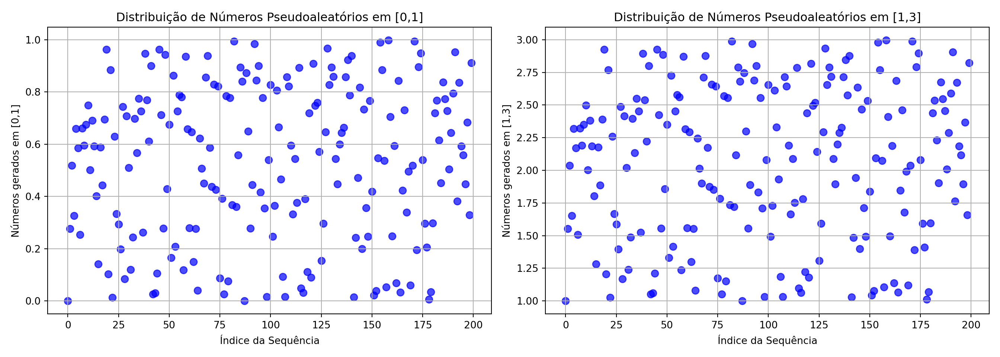
15.8.4 Geração de amostras aleatórias de distribuições de probabilidade
Os números pseudoaleatórios gerados pelo LCG (\(U_{i})\) seguem uma distribuição uniforme no intervalo \([0,1]\). No entanto, muitos problemas exigem amostras de distribuições diferentes, como a Normal, Exponencial ou Poisson.
15.8.4.1 Método da Inversa da Função de distribuição Acumulada (CDF)
A geração de números aleatórios de uma distribuição de probabilidade qualquer pode ser feita por meio da inversa de sua função de distribuição acumulada (CDF).
Se \(F(x)\) é a CDF de uma variável aleatória \(X\), então:
\[ X = F^{-1}(U) \]
em que:
- \(U \sim U(0,1)\): é um número pseudoaleatório que segue uma distribuição uniforme
- \(F^{-1}\): função inversa da CDF da distribuição da variável aleatória \(X\)
Exemplo 1: variável aleatória \(X\) que siga uma distribuição uniforme com parâmetros \(a,b\). Sua CDF é
\[ F(x)=\frac{x-a}{b-a} \]
Invertendo-se a CDF tem-se
\[ x=F^{-1}(p) = a + p\cdot(b-a) \]
em que \(p\) é o valor da probabilidade no intervalo [0,1]. Como \(U \sim U(0,1)\) é um número pseudoaleatório uniforme
\[ F^{-1}(U) = a + U(b-a) \]
Se admitirmos valores \(a=2,b=3\), um valor aleatório \(x\) da variável aleatória \(X\) gerado a partir do número aleatório \(U=0.56\) será \(x=2+0.56*(3-2)=2.56\).
Exemplo 2: variável aleatória \(X\) que siga a distribuição exponencial com parâmetro \(\lambda\). Sua CDF é
\[ F(x) = 1 - e^{-\lambda x} \]
Invertendo-se a CDF tem-se
\[ x=F^{-1}(p) = -\frac{1}{\lambda} \ln(1 - p). \]
em que \(p\) é o valor da probabilidade no intervalo [0,1]. Como \(U \sim U(0,1)\) é um número pseudoaleatório uniforme
\[ F^{-1}(U) = -\frac{1}{\lambda} \ln(1 - U). \]
Se admitirmos um valor de \(\lambda=3\), um valor aleatório \(x\) da variável aleatória \(X\) gerado a partir do número aleatório \(U=0.56\) será \(x= -\frac{1}{3} \ln(1 - 0.56)=0.2729\).
Exemplo 3: variável aleatória \(X\) que siga uma distribuição Normal com parâmetros \(\mu, \sigma\). Sua CDF é
\[ F(x) = \frac{1}{\sqrt{2 \pi \sigma^2}} \int_{-\infty}^{x} e^{-\frac{(t - \mu)^2}{2 \sigma^2}} \, dt\\ \]
Essa função não possui uma inversa fechada em termos de funções elementares. Portanto, sua inversa é frequentemente aproximada numericamente ou expressa em termos da função de erro inversa (\(\operatorname{erf}^{-1}\)).
15.8.4.2 Quando \(F^{-1}(X)\) não possui uma inversa fechada
Método da Aceitação-Rejeição: usado para gerar amostras de uma distribuição-alvo quando a inversa da CDF não está disponível, utilizando uma distribuição auxiliar e uma função de aceitação para gerar amostras.
Método de Newton-Raphson: método numérico iterativo usado para encontrar aproximações da inversa da CDF resolvendo a equação \(F(X)=U\).
15.8.5 Exemplo 1: simulação Monte Carlo de Decision Analysis for Management Judgment, (Goodwin, Wright e Phillips,2004)
Neste exemplo, analisamos as entradas (cash inflows) e saídas (cash outflows) de caixa de um sistema para se estimar Lucro = Cash inflows - Cash outflows.
Entradas de Caixa (Cash Inflows)
| Cash inflows ($) | Probabilidade | CDF |
|---|---|---|
| 50,000 | 0.30 | 0.3 |
| 60,000 | 0.40 | 0.7 |
| 70,000 | 0.30 | 1.0 |
- Probabilidade de 30% para entrada de caixa de 50,000
- Probabilidade de 40% para entrada de caixa de 60,000
- Probabilidade de 30% para entrada de caixa de 70,000
Saídas de Caixa (Cash Outflows)
| Cash outflows ($) | Probability (%) | CDF |
|---|---|---|
| 50,000 | 0.45 | 0.45 |
| 70,000 | 0.55 | 1.00 |
- Probabilidade de 45% para saída de caixa de 50,000.
- Probabilidade de 55% para saída de caixa de 70,000.
Admitindo-se que os valores cash inflow sejam uma variável aleatória \(X\) com função distribuição de probabilidade:
\[ P(X = x) = \begin{cases} 0.30, & x = 50,000 \\ 0.40, & x = 60,000 \\ 0.30, & x = 70,000 \\ 0, & \text{outros valores} \end{cases} \]
e que os valores cash outflow sejam uma variável aleatória \(Y\) com função distribuição de probabilidade:
\[ P(Y = y) = \begin{cases} 0.45, & y = 50,000 \\ 0.55, & y = 70,000 \\ 0, & \text{outros valores} \end{cases} \]
números aleatórios \(U,V\) podem ser gerados e mapeados para valores de cash inflow e cash outflow a partir desses distribuições, e o lucro calculado para cada par de valores.
Etapas da simulação
Passo 1: Gerar valores aleatórios uniformes \(U\)* no intervalo \([0,1]\) para representar Cash Inflows e \(V\)* no intervalo \([0,1]\) Cash Outflows.
Passo 2: Mapeamento para Cash Inflows
Para cada número aleatório \(U\):
- Se \(0 \leq U < 0.30\) → Cash Inflow = 50,000
- Se \(0.30 \leq U < 0.70\) → Cash Inflow = 60,000
- Se \(0.70 \leq U \leq 1.00\) → Cash Inflow = 70,000
Passo 3: Mapeamento para Cash Outflows
Para cada número aleatório \(V\):
- Se \(0 \leq V < 0.45\) → Cash Outflow = 50,000
- Se \(0.45 \leq V \leq 1.00\) → Cash Outflow = 70,000
Passo 4: Cálculo do Lucro
Para cada par de valores simulados:
\[ \text{Lucro} = \text{Cash Inflow} - \text{Cash Outflow} \]
Passo 5: Análise dos Resultados
- Calcule a média dos lucros obtidos.
- Visualize os resultados por meio de gráficos ou tabelas.
# Simulação de Monte Carlo para Fluxo de Caixa Usando U e V
# Parâmetros de Cash Inflows
cash_inflows <- c(50000, 60000, 70000)
prob_inflows <- c(0.30, 0.40, 0.30)
cdf_inflows <- cumsum(prob_inflows)
# Parâmetros de Cash Outflows
cash_outflows <- c(50000, 70000)
prob_outflows <- c(0.45, 0.55)
cdf_outflows <- cumsum(prob_outflows)
# Número de simulações
n_simulations <- 1000
# Geração de números aleatórios independentes para U (Inflows) e V (Outflows)
set.seed(123) # Garante reprodutibilidade
U <- runif(n_simulations) # Para Cash Inflows
V <- runif(n_simulations) # Para Cash Outflows
# Vetores para armazenar resultados
simulated_inflows <- numeric(n_simulations)
simulated_outflows <- numeric(n_simulations)
simulated_profit <- numeric(n_simulations)
# Mapeamento de U para Cash Inflows
for (i in 1:n_simulations) {
if (U[i] < cdf_inflows[1]) {
simulated_inflows[i] <- cash_inflows[1]
} else if (U[i] < cdf_inflows[2]) {
simulated_inflows[i] <- cash_inflows[2]
} else {
simulated_inflows[i] <- cash_inflows[3]
}
}
# Mapeamento de V para Cash Outflows
for (i in 1:n_simulations) {
if (V[i] < cdf_outflows[1]) {
simulated_outflows[i] <- cash_outflows[1]
} else {
simulated_outflows[i] <- cash_outflows[2]
}
}
# Cálculo do Lucro
simulated_profit <- simulated_inflows - simulated_outflows
# Tabela de resultados agregados
profit_table <- as.data.frame(table(simulated_profit))
profit_table$Probability <- as.numeric(profit_table$Freq) / n_simulations
# Gráfico com Probabilidades no Topo das Barras
library(ggplot2)
ggplot(profit_table, aes(x = as.numeric(as.character(simulated_profit)), y = Probability)) +
geom_bar(stat = "identity", fill = "skyblue", color = "black") +
geom_text(
aes(label = sprintf("%.2f", Probability)),
vjust = -0.5,
size = 4
) +
labs(
title = "Distribuição do Lucro Simulado",
x = "Lucro ($)",
y = "Probabilidade"
) +
theme_minimal()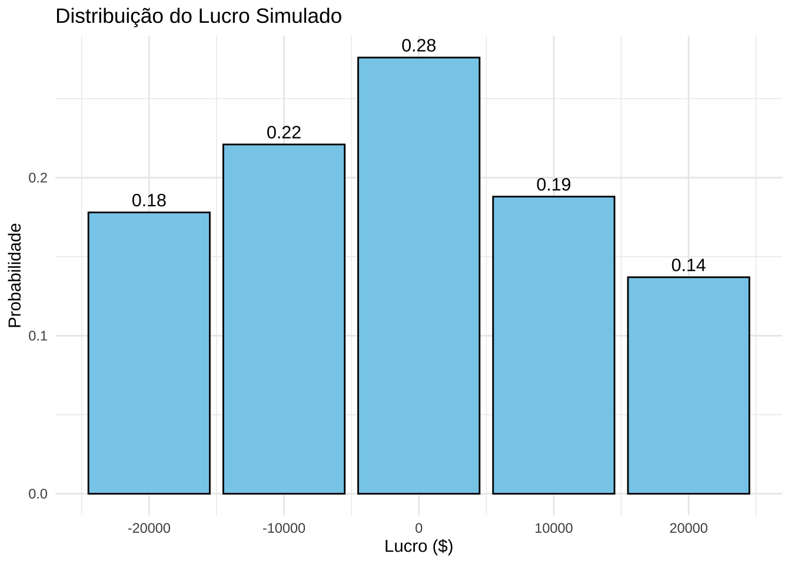
15.8.6 Exemplo 2: The Elite Pottery Company de Decision Analysis for Management Judgment (Goodwin, Wright e Phillips,2004)
Neste exemplo, analisamos os custos (Variable Costs), vendas (Sales) e custos fixos (Fixed Costs) de um sistema para estimar o lucro (Profit):
\[ \text{Profit} = (\text{Unitary Price - Variable Costs}) \times \text{Sales - Fixed Costs} \]
O preço unitário (unitary price) do produto é fixado em $25 por unidade e tratado como parâmetro determinístico do modelo. As demais variáveis — Variable Costs, Sales (units) e Fixed Costs — são tratadas como variáveis aleatórias, com distribuições de probabilidade definidas a seguir.
Custos Variáveis (Variable Costs)
| Variable Costs ($) | Probabilidade | CDF |
|---|---|---|
| 13 | 0.30 | 0.30 |
| 8 | 0.40 | 0.70 |
| 18 | 0.30 | 1.00 |
- Probabilidade de 30% para custo variável de 13
- Probabilidade de 40% para custo variável de 8
- Probabilidade de 30% para custo variável de 18
Vendas (Sales)
| Sales | Probabilidade | CDF |
|---|---|---|
| 22,000 | 0.30 | 0.30 |
| 10,000 | 0.40 | 0.70 |
| 30,000 | 0.30 | 1.00 |
- Probabilidade de 30% para vendas de 22,000
- Probabilidade de 40% para vendas de 10,000
- Probabilidade de 30% para vendas de 30,000
Custos Fixos (Fixed Costs)
| Fixed Costs ($) | Probabilidade | CDF |
|---|---|---|
| 175,000 | 0.30 | 0.30 |
| 100,000 | 0.40 | 0.70 |
| 300,000 | 0.30 | 1.00 |
- Probabilidade de 30% para custo fixo de 175,000
- Probabilidade de 40% para custo fixo de 100,000
- Probabilidade de 30% para custo fixo de 300,000
Admitindo-se que os valores Variable Costs sejam uma variável aleatória \(X\) com função distribuição de probabilidade:
\[ P(X = x) = \begin{cases} 0.30, & x = 13 \\ 0.40, & x = 8 \\ 0.30, & x = 18 \\ 0, & \text{outros valores} \end{cases} \]
E que os valores Sales sejam uma variável aleatória \(Y\) com função distribuição de probabilidade:
\[ P(Y = y) = \begin{cases} 0.30, & y = 22,000 \\ 0.40, & y = 10,000 \\ 0.30, & y = 30,000 \\ 0, & \text{outros valores} \end{cases} \]
E que os valores Fixed Costs sejam uma variável aleatória \(Z\) com função distribuição de probabilidade:
\[ P(Z = z) = \begin{cases} 0.30, & z = 175,000 \\ 0.40, & z = 100,000 \\ 0.30, & z = 300,000 \\ 0, & \text{outros valores} \end{cases} \]
Números aleatórios \(U, V, W\) podem ser gerados e mapeados para valores de Variable Costs, Sales e Fixed Costs a partir dessas distribuições, e o lucro calculado para cada conjunto de valores.
Etapas da Simulação
Passo 1: Gerar valores aleatórios uniformes
- \(U\) no intervalo \([0,1]\) para representar Variable Costs.
- \(V\) no intervalo \([0,1]\) para representar Sales.
- \(W\) no intervalo \([0,1]\) para representar Fixed Costs.
Passo 2: Mapeamento para Variable Costs
Para cada número aleatório \(U\):
- Se \(0 \leq U < 0.30\) → Variable Cost = 13
- Se \(0.30 \leq U < 0.70\) → Variable Cost = 8
- Se \(0.70 \leq U \leq 1.00\) → Variable Cost = 18
Passo 3: Mapeamento para Sales
Para cada número aleatório \(V\):
- Se \(0 \leq V < 0.30\) → Sales = 22,000
- Se \(0.30 \leq V < 0.70\) → Sales = 10,000
- Se \(0.70 \leq V \leq 1.00\) → Sales = 30,000
Passo 4: Mapeamento para Fixed Costs
Para cada número aleatório \(W\):
- Se \(0 \leq W < 0.30\) → Fixed Costs = 175,000
- Se \(0.30 \leq W < 0.70\) → Fixed Costs = 100,000
- Se \(0.70 \leq W \leq 1.00\) → Fixed Costs = 300,000
Passo 5: Cálculo do Lucro
Para cada conjunto de valores simulados:
\[ \text{Profit} = \text{(Unitary Price - Variable Cost)} \times \text{Sales - Fixed Cost}\\ \text{Lucro} = (25 - \text{Custo Variável}) \times \text{Vendas} - \text{Custo Fixo} \]
Passo 6: Análise dos Resultados
- Calcule a média dos lucros obtidos.
- Visualize os resultados por meio de gráficos ou tabelas.
# Parâmetros
variable_costs <- c(13, 8, 18)
sales <- c(22000, 10000, 30000)
fixed_costs <- c(175000, 100000, 300000)
prob_variable <- c(0.30, 0.40, 0.30)
prob_sales <- c(0.30, 0.40, 0.30)
prob_fixed <- c(0.30, 0.40, 0.30)
cdf_variable <- cumsum(prob_variable)
cdf_sales <- cumsum(prob_sales)
cdf_fixed <- cumsum(prob_fixed)
# Simulação
n_simulations <- 1000
set.seed(123)
U <- runif(n_simulations)
V <- runif(n_simulations)
W <- runif(n_simulations)
variable_sim <- variable_costs[findInterval(U, cdf_variable) + 1]
sales_sim <- sales[findInterval(V, cdf_sales) + 1]
fixed_sim <- fixed_costs[findInterval(W, cdf_fixed) + 1]
profit <- (25 - variable_sim) * sales_sim - fixed_sim
# Tabela de resultados agregados com probabilidade
profit_table <- as.data.frame(table(profit))
profit_table$Probability <- as.numeric(profit_table$Freq) / n_simulations
# Gráfico com Probabilidades no Topo das Barras
library(ggplot2)
ggplot(profit_table, aes(x = as.numeric(as.character(profit)), y = Probability)) +
geom_bar(stat = "identity", fill = "skyblue", color = "black") +
geom_text(
aes(label = sprintf("%.2f", Probability)),
vjust = -0.5,
size = 4
) +
labs(
title = "Distribuição do Lucro Simulado",
x = "Lucro ($)",
y = "Probabilidade"
) +
theme_minimal()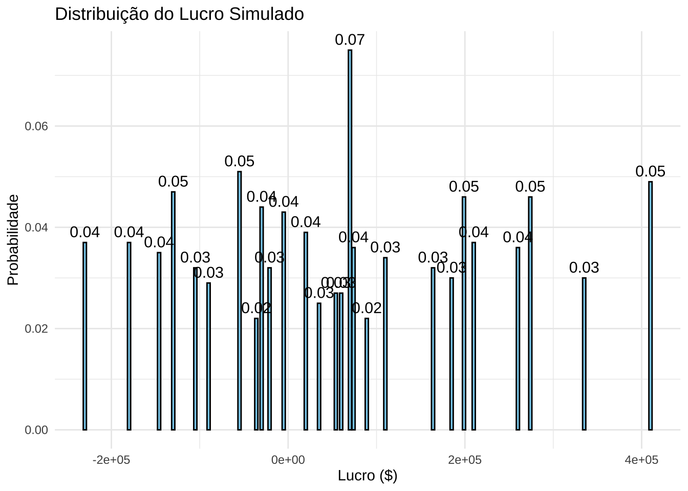
15.8.7 Exemplo 3: Integração Numérica Usando o Método de Monte Carlo
A integração numérica pelo Método de Monte Carlo é uma técnica amplamente utilizada para aproximar valores de integrais definidas, especialmente quando as funções envolvidas são complexas ou não possuem primitivas analíticas. A ideia central do método é substituir o problema do cálculo integral por um problema de probabilidade.
Etapas
Etapa 1: Pontos aleatórios são gerados uniformemente dentro de um retângulo que cobre a região de integração.
Etapa 2: Cada ponto é testado para verificar se está abaixo ou acima da curva definida pela função \(f(x)\).
Etapa 3: A razão entre os pontos que caem abaixo da curva e o número total de pontos é usada para estimar a área sob a curva, que corresponde ao valor da integral.
A estimativa da integral é calculada por meio da seguinte fórmula:
\[ I \approx \frac{\text{Pontos Abaixo da Curva}}{\text{Total de Pontos}} \cdot (b - a) \cdot f_{max} \]
em que:
- \((b - a)\): representa o intervalo de integração.
- \(f_{max}\): é o valor máximo da função no intervalo considerado.
- \(n\): número de pontos aleatórios gerados.
Esse método é especialmente útil quando as funções são complexas ou multidimensionais, tornando os métodos tradicionais de integração inviáveis.
No código a seguir, apresentamos uma implementação generalizada para integrar qualquer função definida em um intervalo arbitrário, com representação visual dos pontos gerados.
Aplicação para a determinação da integral da função \(f(x) = sin(x)\) nos limites \([0 \pi]\):
\[ I = \int_0^{\pi} \sin(x) \, dx \]
Sabemos que a primitiva de \(\sin(x)\) é dada por:
\[ \int \sin(x) \, dx = -\cos(x) + C \\ I = \left[-\cos(x)\right]_0^{\pi}\\ I = -\cos(\pi) + \cos(0)\\ \cos(\pi) = -1 \quad \text{e} \quad \cos(0) = 1\\ I = -(-1) + 1\\ I = 1 + 1 = 2\\ \]
O valor exato da integral de \(f(x) = \sin(x)\) no intervalo \([0, \pi]\) é:
\[ I = 2 \]
Esse resultado analítico servirá como referência para compararmos com os valores obtidos numericamente pelo método de Monte Carlo.
# Função a ser integrada
f <- function(x) {
sin(x)
}
# Parâmetros
a <- 0
b <- pi
f_max <- 1
n <- 10000
# Gerar gráfico com valor da integral exibido
graf <- monte_carlo_integration(f, a, b, f_max, n)
graf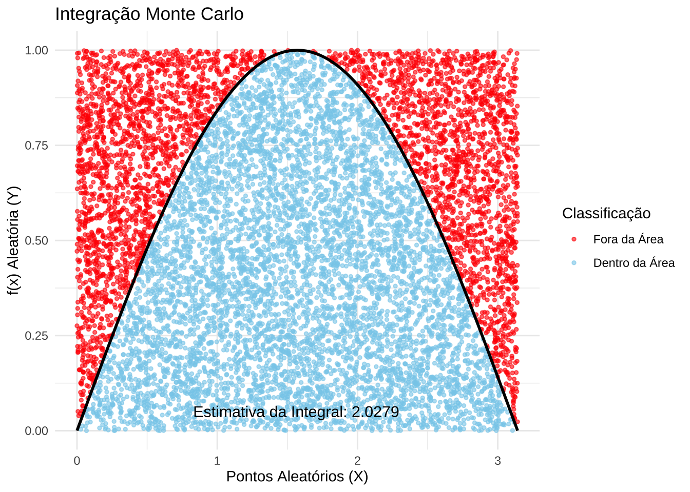